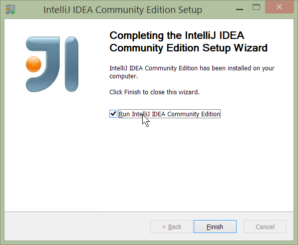
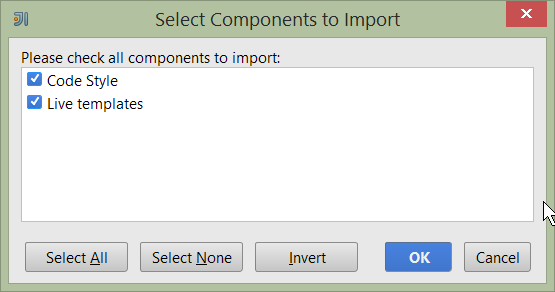
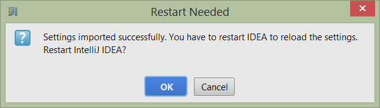
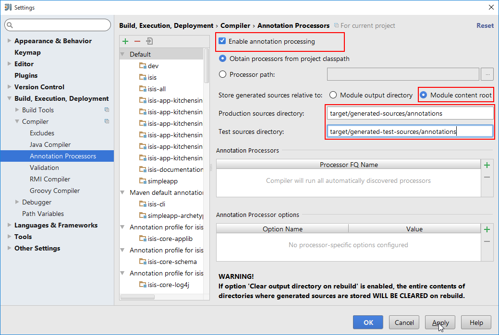

1. Contributors' Guide
This contributors' guide has three related audiences:
-
programmers who want to just use Apache Isis to build applications, and want help setting up their development environment or to build their code from the command line (eg to execute within a continuous integration server such as Jenkins)
-
programmers who want to contribute back patches (bug fixes, new features) either to the codebase or the framework’s documentation
-
committers of Apache Isis itself who want guidance on release process, publishing documents and other related procedures.
This contributors' guide is not intended as a reference manual; for that see the Reference Guide. This guide also doesn’t describe how to actually build an Apache Isis application; for that see the Users' Guide.
2. Using an IDE
The vast majority of Java developers use an IDE to assist with developing their code, and we highly recommend that you do like wise as you develop your Apache Isis applications using an IDE. Apache Isis is built with Maven, and all modern IDEs can import Maven projects.
This chapter shows how to setup and use two of the most popular IDEs, IntelliJ IDEA and Eclipse.
2.1. Developing using IntelliJ IDEA
|
This material does not constitute an endorsement; JetBrains is not affiliated to Apache Software Foundation in any way. |
This section describes how to install and setup JetBrains' IntelliJ IDEA, then how to import an application into IntelliJ and run it.
2.1.1. Installing and Setting up
This section covers installation and setup. These notes relates to IntelliJ Community Edition 14.1.x, with screenshots taken for Windows.
Download and Install
Download latest version of IntelliJ Community Edition, and install:
Start the wizard, click through the welcome page:
Figure 1. IntelliJ Installation Wizard - Welcome page
Choose the location to install the IDE:

Figure 2. IntelliJ Installation Wizard - Choose Location
Adjust any installation options as you prefer:

Figure 3. IntelliJ Installation Wizard - Installation Options
and the start menu:

Figure 4. IntelliJ Installation Wizard - Start Menu Folder
and finish up the wizard:

Figure 5. IntelliJ Installation Wizard - Completing the Wizard
Later on we’ll specify the Apache Isis/ASF code style settings, so for now select I do not want to import settings:

Figure 6. IntelliJ Installation Wizard - Import Settings
Finally, if you are young and trendy, set the UI theme to Darcula:

Figure 7. IntelliJ Installation Wizard Set UI Theme
New Project
In IntelliJ a project can contain multiple modules; these need not be physically located together. (If you are previously an Eclipse user, you can think of it as similar to an Eclipse workspace).
Start off by creating a new project:

Figure 8. IntelliJ Create New Project
We want to create a new Java project:

Figure 9. IntelliJ Create New Project - Create a Java project
We therefore need to specify the JDK.
| at the time of writing Apache Isis supports only Java 7; Java 8 is scheduled for support in Apache Isis v1.9.0 |

Figure 10. IntelliJ Create New Java Project - Select the JDK
Specify the directory containing the JDK:

Figure 11. IntelliJ Create New Project - Select the JDK location
Finally allow IntelliJ to create the directory for the new project:

Figure 12. IntelliJ Create New Project
Import Settings
Next we need to configure IntelliJ with ASF/Apache Isis' standard templates and coding conventions. These are bundled as the settings.jar JAR file download from the Apache Isis website).
Import using: File > Import Settings, and specify the directory that you have downloaded the file to:

Figure 13. IntelliJ Import Settings - Specify JAR file
Select all the (two) categories of settings available in the JAR file:

Figure 14. IntelliJ Import Settings - Select all categories
And then restart:

Figure 15. IntelliJ Import Settings - Restart
Other Settings (Compiler)
There are also some other settings that influence the compiler. We highly recommend you set these.
On the Compiler Settings page, ensure that build automatically is enabled (and optionally compile independent modules in parallel):

Figure 16. IntelliJ Compiler Settings
On the Annotation Processors page, enable and adjust for the 'default' setting:

Figure 17. IntelliJ Annotation Processor Settings
This setting enables the generation of the Q* classes for DataNucleus type-safe queries, as well as being required
for frameworks such as Project Lombok.
|
IntelliJ may also have inferred these settings for specific projects/modules when importing; review the list on the left to see if the default is overridden and fix/delete as required. |
Other Settings (Maven)
There are also some other settings for Maven that we recommend you adjust (though these are less critical):
First, specify an up-to-date Maven installation, using File > Settings (or IntelliJ > Preferences if on MacOS):

Figure 18. IntelliJ Maven Settings - Installation
Still on the Maven settings page, configure as follows:

Figure 19. IntelliJ Maven Settings - Configuration
Other Settings (Misc)
These settings are optional but also recommended.
On the auto import page, check the optimize imports on the fly and add unambiguous imports on the fly

Figure 20. IntelliJ Maven Settings - Auto Import
2.1.2. Importing Maven Modules
Let’s load in some actual code! We do this by importing the Maven modules.
First up, open up the Maven tool window (View > Tool Windows > Maven Projects). You can then use the 'plus' button to add Maven modules. In the screenshot you can see we’ve loaded in Apache Isis core; the modules are listed in the Maven Projects window and corresponding (IntelliJ) modules are shown in the Projects window:

Figure 21. IntelliJ Maven Module Management - Importing Maven modules
We can then import another module (from some other directory). For example, here we are importing the Isis Addons' todoapp example:

Figure 22. IntelliJ Maven Module Management - Importing another Module
You should then see the new Maven module loaded in the Projects window and also the Maven Projects window:

Figure 23. IntelliJ Maven Module Management -
If any dependencies are already loaded in the project, then IntelliJ will automatically update the CLASSPATH to resolve to locally held modules (rather from .m2/repository folder). So, for example (assuming that the <version> is correct, of course), the Isis todoapp will have local dependencies on the Apache Isis core.
You can press F4 (or use File > Project Structure) to see the resolved classpath for any of the modules loaded into the project.
If you want to focus on one set of code (eg the Isis todoapp but not Apache Isis core) then you could remove the module; but better is to ignore those modules. This will remove from the the Projects window but keep them available in the Maven Projects window for when you next want to work on them:

Figure 24. IntelliJ Maven Module Management - Ignoring Modules
Confirm that it’s ok to ignore these modules:

Figure 25. IntelliJ Maven Module Management - Ignoring Modules (ctd)
All being well you should see that the Projects window now only contains the code you are working on. Its classpath dependencies will be adjusted (eg to resolve to Apache Isis core from .m2/repository):

Figure 26. IntelliJ Maven Module Management - Updated Projects Window
2.1.3. Running
Let’s see how to run both the app and the tests.
Running the App
Once you’ve imported your Isis application, we should run it. We do this by creating a Run configuration, using Run > Edit Configurations.
Set up the details as follows:

Figure 27. IntelliJ Running the App - Run Configuration
We specify the Main class to be org.apache.isis.WebServer; this is a wrapper around Jetty. It’s possible to pass program arguments to this (eg to automatically install fixtures), but for now leave this blank.
Also note that Use classpath of module is the webapp module for your app, and that the working directory is $MODULE_DIR$.
Next, and most importantly, configure the DataNucleus enhancer to run for your dom goal. This can be done by defining a Maven goal to run before the app:

Figure 28. IntelliJ Running the App - Datanucleus Enhancer Goal
The -o flag in the goal means run off-line; this will run faster.
| if you forget to set up the enhancer goal, or don’t run it on the correct (dom) module, then you will get all sorts of errors when you startup. These usually manifest themselves as class cast exception in DataNucleus. |
You should now be able to run the app using Run > Run Configuration. The same configuration can also be used to debug the app if you so need.
Running the Unit Tests
The easiest way to run the unit tests is just to right click on the dom module in the Project Window, and choose run unit tests. Hopefully your tests will pass (!).

Figure 29. IntelliJ Running the App - Unit Tests Run Configuration
As a side-effect, this will create a run configuration, very similar to the one we manually created for the main app:

Figure 30. IntelliJ Running the App - Unit Tests Run Configuration
Thereafter, you should run units by selecting this configuration (if you use the right click approach you’ll end up with lots of run configurations, all similar).
Running the Integration Tests
Integration tests can be run in the same way as unit tests, however the dom module must also have been enhanced.
One approach is to initially run the tests use the right click on the integtests module; the tests will fail because the code won’t have been enhanced, but we can then go and update the run configuration to run the datanucleus enhancer goal (same as when running the application):

Figure 31. IntelliJ Running the App - Integration Tests Run Configuration
2.1.4. Hints and Tips
Keyboard Cheat Sheets
You can download 1-page PDFs cheat sheets for IntelliJ’s keyboard shortcuts: * for Windows * for MacOS
Probably the most important shortcut on them is for Find Action:
- ctrl-shift-A on Windows
- cmd-shift-A on MacOS.
This will let you search for any action just by typing its name.
Switch between Tools & Editors
The Tool Windows are the views around the editor (to left, bottom and right). It’s possible to move these around to your preferred locations.
-
Use
alt-1throughalt-9(orcmd-1throughalt-9) to select the tool windows-
Press it twice and the tool window will hide itself; so can use to toggle
-
-
If in the Project Window (say) and hit enter on a file, then it will be shown in the editor, but (conveniently) the focus remains in the tool window. To switch to the editor, just press
Esc.-
If in the Terminal Window, you’ll need to press
Shift-Esc.
-
-
If on the editor and want to locate the file in (say) the Project Window, use
alt-F1. -
To change the size of any tool window, use
ctrl-shift-arrow
Using these shortcuts you can easily toggle between the tool windows and the editor, without using the mouse. Peachy!
Navigating Around
For all of the following, you don’t need to type every letter, typing "ab" will actually search for ".a.*b.".
-
to open classes or files or methods that you know the name of:
-
ctrl-Nto open class -
ctrl-shift-Nto open a file -
(bit fiddly this)
ctrl-shift-alt-Nto search for any symbol.
-
-
open up dialog of recent files:
ctrl-E -
search for any file:
shift-shift
Navigating around:
* find callers of a method (the call hierarchy): ctrl-alt-H
* find subclasses or overrides: ctrl-alt-B
* find superclasses/interface/declaration: ctrl-B
Viewing the structure (ie outline) of a class
* ctrl-F12 will pop-up a dialog showing all members
** hit ctrl-F12 again to also see inherited members
Editing
-
Extend selection using
ctrl-W-
and contract it down again using
ctrl-shift-W
-
-
to duplicate a line, it’s
ctrl-D-
if you have some text selected (or even some lines), it’ll actually duplicate the entire selection
-
-
to delete a line, it’s
ctrl-X -
to move a line up or down:
shift-alt-upandshift-alt-down-
if you have selected several lines, it’ll move them all togethe
-
-
ctrl-shift-Jcan be handy for joining lines together-
just hit enter to split them apart (even in string quotes; IntelliJ will "do the right thing")
-
Intentions and Code Completion
Massively useful is the "Intentions" popup; IntelliJ tries to guess what you might want to do. You can activate this using`alt-enter`, whenever you see a lightbulb/tooltip in the margin of the current line.
Code completion usually happens whenever you type '.'. You can also use ctrl-space to bring these up.
In certain circumstances (eg in methods0) you can also type ctrl-shift-space to get a smart list of methods etc that you might want to call. Can be useful.
Last, when invoking a method, use ctrl-P to see the parameter types.
Refactoring
Loads of good stuff on the Refactor menu; most used are:
-
Rename (
shift-F6) -
Extract
-
method:
ctrl-alt-M -
variable:
ctrl-alt-V
-
-
Inline method/variable:
ctrl-alt-N -
Change signature
If you can’t remember all those shortcuts, just use ctrl-shift-alt-T (might want to rebind that to something else!) and get a context-sensitive list of refactorings available for the currently selected object
Plugins
You might want to set up some additional plugins. You can do this using File > Settings > Plugins (or equivalently File > Other Settings > Configure Plugins).
Recommended are:
-
Maven Helper plugin
More on this below.
-
AsciiDoctor plugin
Useful if you are doing any authoring of documents.
Some others you might like to explore are:

Figure 32. IntelliJ Plugins
Maven Helper Plugin
This plugin provides a couple of great features. One is better visualization of dependency trees (similar to Eclipse).
If you open a pom.xml file, you’ll see an additional "Dependencies" tab:
{kind=link}
Clicking on this gives a graphical tree representation of the dependencies, similar to that obtained by mvn dependency:tree, but filterable.

The plugin also provides the ability to easily run a Maven goal on a project:

This menu can also be bound to a keystroke so that it is available as a pop-up:

Troubleshooting
When a Maven module is imported, IntelliJ generates its own project files (suffix .ipr), and the application is actually built from that.
Occasionally these don’t keep in sync (even if auto-import of Maven modules has been enabled).
To fix the issue, try: * reimport module * rebuild selected modules/entire project * remove and then re-add the project * restart, invalidating caches * hit StackOverflow (!)
One thing worth knowing; IntelliJ actively scans the filesystem all the time. It’s therefore (almost always) fine to build the app from the Maven command line; IntelliJ will detect the changes and keep in sync. If you want to force that, use File > Synchronize, ctrl-alt-Y.
If you hit an error of "duplicate classes":

then make sure you have correctly configured the annotation processor settings. Pay attention in particular to the "Production sources directory" and "Test sources directory", that these are set up correctly.
2.1.5. Running Integration Tests
When running integration tests from within IntelliJ, make sure that the search for tests radio button is set to In single module:

If this radio button is set to one of the other options then you may obtain class loading issues; these result from IntelliJ attempting to run unit tests of the dom project that depend on test classes in that module, but using the classpath of the integtests module whereby the dom test-classes (test-jar artifact) are not exposed on the Maven classpath.
2.1.6. Advanced
In this section are a couple of options that will reduce the length of the change code/build/deploy/review feedback loop.
Setting up Dynamic Reloading
DCEVM enhances the JVM with true hot-swap adding/removing of methods as well as more reliable hot swapping of the implementation of existing methods.
In the context of Apache Isis, this is very useful for contributed actions and mixins and also view models; you should then be able to write these actions and have them be picked up without restarting the application.
Changing persisting domain entities is more problematic, for two reasons: the JDO/DataNucleus enhancer needs to run on domain entities, and also at runtime JDO/DataNucleus would need to rebuild its own metamodel. You may find that adding actions will work, but adding new properties or collections is much less likely to.
To set up DCEVM, download the appropriate JAR from the github page, and run the installer. For example:
java -jar DCEVM-light-8u51-installer.jar|
Be sure to run with appropriate privileges to be able to write to the installation directories of the JDK. If running
on Windows, that means running as |
After a few seconds this will display a dialog listing all installations of JDK that have been found:

Select the corresponding installation, and select Replace by DCEVM.

In IntelliJ, register the JDK in File > Project Structure dialog:
{kind=link}
Finally, in the run configuration, select the patched JDK:

Setting up JRebel
See the repo for the (non-ASF) Isis JRebel plugin. With some modification, this should work for IntelliJ too.
Note that JRebel is a commercial product, requiring a license. At the time of writing there is also currently a non-commercial free license (though note this comes with some usage conditions).
2.2. Developing using Eclipse
|
This material does not constitute an endorsement; Eclipse foundation is not affiliated to Apache Software Foundation in any way. |
If you are an Eclipse user, then we recommend you download the "Eclipse JEE package" configuration.
When running an Apache Isis application, it’s necessary to setup the development environment so that the Java bytecode can be enhanced by the DataNucleus enhancer. If working in Eclipse, then JDO enhancement is most easily done by installing the DataNucleus' Eclipse plugin. This hooks the bytecode enhancement of your domain objects into Eclipse’s normal incremental compilation.
This plugin needs to be configured for each of your domain modules (usually just one in any given app). The steps are therefore:
-
import the project into Eclipse
-
configure the DataNucleus enhancer
-
run the app from the
.launchfile
2.2.1. Screencast
The following screencast shows how to import an Apache Isis maven-based application into Eclipse and configure to use with the JDO Objectstore
2.2.2. Importing the Project
Use File > Import, then Maven > Existing Maven Projects.
2.2.3. Add DataNucleus support
|
Make sure you are in the 'Java' Perspective, not the 'Java EE' Perspective. |
In Eclipse, for the domain object model project, first add DataNucleus support:

Then turn on Auto-Enhancement:

Update the classpath
DataNucleus' enhancer uses the domain object model’s own classpath to reference DataNucleus JARs. So, even though your domain objects are unlikely to depend on DataNucleus, these references must still be present.
See the earlier section on DataNucleus enhancer for details of the contents of the pom.xml. Chances are it is already set up from running the SimpleApp archetype.
Then, tell DataNucleus to use the project classpath:

When the enhancer runs, it will print out to the console:

Workaround for path limits (the DN plugin to use the persistence.xml)
If running on Windows then the DataNucleus plugin is very likely to hit the Windows path limit.
To fix this, we configure the enhancer to read from the persistence.xml file.
As a prerequisite, first make sure that your domain object model has a persistence.xml file. Then specify the persistence-unit in the project properties:
{kind=link}
Workaround: If the enhancer fails
On occasion it appears that Eclipse can attempt to run two instances of the DataNucleus enhancer. This is probably due to multiple Eclipse builders being defined; we’ve noticed multiple entries in the Eclipse’s Debug view:

At any rate, you’ll know you’ve encountered this error if you see the following in the console:
{kind=link}
The best solution is to remove DataNucleus support and then to re-add it:

If you consistently hit problems, then the final recourse is to disable the automatic enhancement and to remember to manually enhance your domain object model before each run.
Not ideal, we know. Please feel free to contribute a better solution :-)
2.2.4. Running the App
The simpleapp archetype automatically provides a .launch configurations in the webapp module. You can therefore very simply run the application by right-clicking on one of these files, and choosing "Run As…" or "Debug As…".
|
The screencast above shows this in action. |
2.2.5. Other domain projects.
There is nothing to prevent you having multiple domain projects. You might want to do such that each domain project corresponds to a DDD module, thus guaranteeing that there are no cyclic dependencies between your modules.
If you do this, make sure that each project has its own persistence.xml file.
And, remember also to configure Eclipse’s DataNucleus plugin for these other domain projects.
2.2.6. Advanced
In this section are a couple of options that will reduce the length of the change code/build/deploy/review feedback loop.
Setting up Dynamic Reloading
DCEVM enhances the JVM with true hot-swap adding/removing of methods as well as more reliable hot swapping of the implementation of existing methods.
In the context of Apache Isis, this is very useful for contributed actions and mixins and also view models; you should then be able to write these actions and have them be picked up without restarting the application.
Changing persisting domain entities is more problematic, for two reasons: the JDO/DataNucleus enhancer needs to run on domain entities, and also at runtime JDO/DataNucleus would need to rebuild its own metamodel. You may find that adding actions will work, but adding new properties or collections is much less likely to.
For details of setting up DCEVM, see the corresponding section in the IntelliJ documentation.
2.3. Project Lombok
Project Lombok is an open source project to reduce the amount of boilerplate in your code.
For example, rather than write:
private String name;
public String getName() {
return name;
}
public void setName(String name) {
this.name = name;
}you can instead write simply:
@Getter @Setter
private String name;Under the covers it is implemented as an annotation processor; it basically hooks into the Java compiler so that it can emit additional bytecode (eg for the getter and setter). See here for details of setting up in IntelliJ (Eclipse has very similar support).
Apache Isis supports Project Lombok, in that the annotations that would normally be placed on the getter (namely Property, @PropertyLayout, @Collection, @CollectionLayout and @MemberOrder) can be placed on the field instead.
There are plugins for Lombok for maven; it’s just a matter of adding the required dependency. To compile the code within your IDE (eg so that its compiler "knows" that there is, actually, a getter and setter) will require an Lombok plugin appropriate to that IDE. See the Lombok download page for more information.
2.3.1. Future thoughts
In the future we might extend/fork Lombok so that it understands Isis' own annotations (ie @Property and @Collection)
rather than Lombok’s own @Getter and `@Setter.
It might also be possible to use Lombok to generate the domain event classes for each member.
2.4. AgileJ
|
This material does not constitute an endorsement; AgileJ Structure Views is not affiliated to Apache Software Foundation in any way. |
AgileJ Structure Views is a commercial product to reverse engineer and visualize Java classes from source code.
The key to using the tool is in developing a suitable filter script, a DSL. You can use the following script as a starting point for visualizing Apache Isis domain models:
// use CTRL+SPACE for completion suggestions
hide all fields
hide setter methods
hide private methods
hide methods named compareTo
hide methods named toString
hide methods named inject*
hide methods named disable*
hide methods named default*
hide methods named hide*
hide methods named autoComplete*
hide methods named choices*
hide methods named title
hide methods named iconName
hide methods named validate*
hide methods named modify*
hide protected methods
hide types annotated as DomainService
hide types named Constants
hide types named InvoicingInterval
hide enums
hide constructors
hide inner types named *Event
hide inner types named *Functions
hide inner types named *Predicates
show getter methods in green
show methods annotated as Programmatic in orange
show methods annotated as Action in largest
hide dependency lines
hide call lines
hide method linesFor more information on AgileJ, see Paul Wells' 8-part tutorial series on Youtube; the first can be found here (view the "show more" comments to click through to other parts).
3. Code and File Templates
We provide parameterized templates, for both IntelliJ and Eclipse, to help you write your domain applications.
On IntelliJ we provide both file templates (File > Settings > Editor > File and Code Templates) and also live templates (File > Settings > Editor > Live Templates). The former are used to create new classes or files (eg a new domain entity), while the latter are intended to modify an existing file (eg create a new property or add a toString() method etc).
On Eclipse we provide only the latter sort of template (Windows > Preferences > Java > Editor > Templates).
There are templates for writing Apache Isis domain objects, for writing unit tests (JUnit and JMock), and also for writing Asciidoc documentation (see also the appendix).
3.1. Download
The following table lists the templates available to download:
| Purpose | IntelliJ file template |
Prefix | IntelliJ live template |
Eclipse template |
|---|---|---|---|---|
Domain Objects |
|
|||
JUnit tests |
(none) |
|
||
JMock tests |
(none) |
|
||
Asciidoc |
(none) |
|
(none) |
The most commonly used domain objects (live) templates are also listed on the Apache Isis cheat sheet.
3.2. Installation
3.2.1. IntelliJ
To install in the live templates IntelliJ (Community edition 15), copy to the relevant config/templates directory, eg:
-
Windows
<User home>\.IdeaIC15\config\templates -
Linux
~/.IdeaIC14/config/templates -
Mac OS
~/Library/Preferences/IdeaIC15/templates
If using the Ultimate edition, the directory is .IntelliJIdea15 rather than IdeaIC15.
To install the file templates, use File > Import Settings.
3.2.2. Eclipse
To install in Eclipse, go to Windows > Preferences > Java > Editor > Templates and choose Import.
3.3. Usage
For the live templates, enter the prefix in the editor (is, ju, jm) and the IDE will list all available templates
in that category.
For the file templates (IntelliJ only), these are available from File > New.
4. Command Line and CI
| TODO |
5. Apache Isis Maven Plugin
The Apache Isis Maven plugin defines two goals:
-
validateUse to verify at build time that the metamodel of an application is valid. This runs the
MetaModelValidatorthat is also run when the application is started up. -
xsdUses the
JaxbServiceto generate XSD schemas from any JAXB-annotated view models/DTOs.This is instead of and preferable to using the JAXB schemagen tool, because it uses the framework’s support (via
@XmlJavaValueType) to translate any references to domain objects intoOidDtos (as defined by the Apache Isis common schema).
The validate goal is by default bound to the test phase of your application’s dom sub-module, whereas the xsd goal defaults to the generate-resources phase of a completely separate canonical submodule. An example can be found in the (non-ASF) Isis addons' todoapp example app.
Both goals require an AppManifest to point the plugin at, so that
it knows how to bootstrap an Isis runtime. This is discussed below, followed by sections on configuring the two goals.
5.1. AppManifest
As noted in the introduction, both goals require an AppManifest
to point the plugin at, so that it knows how to bootstrap an Isis runtime.
This can be extremely minimal. For example, the SimpleApp's manifest is:
package domainapp.dom;
...
public class DomainAppDomManifest implements AppManifest {
@Override
public List<Class<?>> getModules() {
return Arrays.asList(
DomainAppDomainModule.class // domain (entities and repositories)
);
}
@Override
public List<Class<?>> getAdditionalServices() { return Collections.emptyList(); }
@Override
public String getAuthenticationMechanism() { return null; }
@Override
public String getAuthorizationMechanism() { return null; }
@Override
public List<Class<? extends FixtureScript>> getFixtures() { return null; }
@Override
public Map<String, String> getConfigurationProperties() { return null; }
}where DomainAppDomainModule simply identifies the package for the manifest to search under:
package domainapp.dom;
public final class DomainAppDomainModule { }As you’ll see below, the configuration for the two goals both refer to this app manifest.
5.2. validate goal
The Apache Isis programming model requires that a number of naming conventions are followed.
For example, the validator will detect any orphaned supporting methods (eg hideXxx()) if the corresponding property
or action has been renamed or deleted but the supporting method was not also updated. Another example is that a class
cannot have a title specified both using title() method and also using @Title annotation.
When running the application these are enforced by the MetaModelValidator component that detects these errors, failing fast.
The purpose of the validate goal of the isis-maven-plugin is to enforce these naming conventions at build time,
typically enforced by way of a continuous integration server.
The validate goal defines a single property:
-
appManifest- fully qualified class name for the app manifest used to bootstrap the application (see discussion above)
The sections below explain how to configure the plugin within an app.
|
The instructions given here relate to |
5.2.1. dom submodule
Update the pom.xml (in your project’s dom module):
<profile>
<id>isis-validate</id>
<activation>
<property>
<name>!skip.isis-validate</name> (1)
</property>
</activation>
<build>
<plugins>
<plugin>
<groupId>org.apache.isis.tool</groupId>
<artifactId>isis-maven-plugin</artifactId>
<version>${isis.version}</version> (2)
<configuration>
<appManifest>domainapp.dom.DomainAppDomManifest</appManifest> (3)
</configuration>
<dependencies>
<dependency>
<groupId>${project.groupId}</groupId>
<artifactId>simpleapp-dom</artifactId> (4)
<version>${project.version}</version>
</dependency>
<!-- workaround to avoid conflict with plexus-default -->
<dependency>
<groupId>com.google.guava</groupId>
<artifactId>guava</artifactId>
<version>16.0.1</version>
</dependency>
</dependencies>
<executions>
<execution>
<phase>test</phase>
<goals>
<goal>validate</goal> (5)
</goals>
</execution>
</executions>
</plugin>
</plugins>
</build>
</profile>| 1 | the profile is active by default, though can be disabled using -Dskip.isis-validate |
| 2 | set to 1.10.0 (or any later version) |
| 3 | the manifest discussed previously; adjust as required |
| 4 | the dom module for the project; adjust as required |
| 5 | binds the plugin’s validate goal to the Maven test lifecycle phase (ie the goal will be called when mvn test is run). |
5.2.2. To run
The plugin is activated by default, so is run simply using:
mvn testThis will run any tests, and then also - because the plugin is activated by the isis-validate property and bound to the test phase, will run the plugin’s validate goal.
If for any reason you want to disable the validation, use:
mvn test -Dskip.isis-validate5.2.3. Example of failure
In the SimpleApp application the SimpleObject defines an updateName action. This has a supporting method:
public SimpleObject updateName( ... ) { ... }
public String default0UpdateName() { ... }We can introduce an error by misspelling the supporting method, for example:
public String default0XUpdateName() { ... }Running mvn test then generates this output:
[error]
[error]
[error]
[error] domainapp.dom.simple.SimpleObject#default0XUpdateName: has prefix default, is probably a supporting method for a property, collection or action. If the method is intended to be an action, then rename and use @ActionLayout(named="...") or ignore completely using @Programmatic
[error]
[error]
[error]
[INFO] ------------------------------------------------------------------------
[INFO] Reactor Summary:
[INFO]
[INFO] Simple App ......................................... SUCCESS [ 0.087 s]
[INFO] Simple App DOM ..................................... FAILURE [ 4.182 s]
[INFO] Simple App Fixtures ................................ SKIPPED
[INFO] Simple App Application ............................. SKIPPED
[INFO] Simple App Integration Tests ....................... SKIPPED
[INFO] Simple App Webapp .................................. SKIPPED
[INFO] ------------------------------------------------------------------------
[INFO] BUILD FAILURE
[INFO] ------------------------------------------------------------------------
[INFO] ...
[ERROR] Failed to execute goal org.apache.isis.tool:isis-maven-plugin:1.11.0-SNAPSHOT:validate (default) on project simpleapp-dom: 1 problems found. -> [Help 1]If one were to attempt to run the application, the same error would appear in the log files on startup (and the application would not boot).
5.2.4. Custom validation rules
It is also possible to customize the validation, explained here. For example, you could enforce project-specific conventions by implementing a custom MetaModelValidator, and registering using a configuration property.
To support this using AppManifest`s, override its `getConfigurationProperties() method:
public class DomainAppDomManifest implements AppManifest {
...
public Map<String, String> getConfigurationProperties() {
final Map<String, String> map = Maps.newTreeMap();
map.put("isis.reflector.validator","com.mycompany.myapp.MyMetaModelValidator");
return map;
}
}5.2.5. 1.9.0 version
The 1.9.0 version of the plugin requires slightly different configuratoin. Rather than using an AppManifest, instead the configuration directory containing isis.properties is specified:
<profile>
<id>isis-validate</id>
<activation>
<activeByDefault>false</activeByDefault> (1)
</activation>
<build>
<plugins>
<plugin>
<groupId>org.apache.isis.tool</groupId>
<artifactId>isis-maven-plugin</artifactId>
<version>1.9.0-SNAPSHOT</version>
<configuration>
<isisConfigDir>../webapp/src/main/webapp/WEB-INF</isisConfigDir> (2)
</configuration>
<dependencies>
<dependency>
<groupId>org.apache.isis.example.application</groupId>
<artifactId>simpleapp-dom</artifactId>
<version>1.9.0-SNAPSHOT</version>
</dependency>
<!-- workaround to avoid conflict with plexus-default -->
<dependency>
<groupId>com.google.guava</groupId>
<artifactId>guava</artifactId>
<version>16.0.1</version>
</dependency>
</dependencies>
<executions>
<execution>
<phase>test</phase>
<goals>
<goal>validate</goal>
</goals>
</execution>
</executions>
</plugin>
</plugins>
</build>
</profile>| 1 | activated using the -P profile flag rather than a -D system property |
| 2 | specify the isisConfigDir directory (containing the isis.properties file). |
To use the 1.9.0 version, use:
mvn -P isis-validate test|
Note that the |
5.3. xsd goal (1.11.0-SNAPSHOT)
The xsd goal of the isis-maven-plugin uses the JaxbService to
generate XSD schemas from any JAXB-annotated view model/DTOs.
This is instead of and preferable to using the JAXB schemagen
tool, because it uses the framework’s support (via
@XmlJavaValueType) to translate any references to domain
objects into OidDtos (as defined by the Apache Isis common schema).
The xsd goal defines the following properties:
-
appManifest- fully qualified class name for the app manifest used to bootstrap the application (see discussion above) -
jaxbClasses- a list of JAXB-annotated view model classes; -
output- (optional) subdirectory under thetargetdirectory to generate the XSDsDefaults to
generated-resources/isis-xsd -
separate- (optional) whether to create separate directories for each JAXB-class.Defaults to
false. Most DTO classes will reference one another or the common schema. Normally it’s fine to merge all these XSDs together. This property, if set, results in each a separate directory for each generation of its XSD or XSDs.
As a convenience to any (Java) consumers, the XSDs generated from the view models can then in turn be generated into DTOs. The original view models and these DTOs are similar but not identical: while the view models can only be used within the Isis application (they may reference underlying domain entities) whereas the DTO classes generated from the XSDs can be used standalone, eg by a Java subscriber running on an ESB such as Apache Camel.
The rest of this section explains how to configure a new xsd submodule that uses the isis-maven-plugin along with
other standard plugins in order to generate both XSDs and DTOs. The pom.xml described below uses Maven profiles
to separate out these two responsibilities.
5.3.1. xsd submodule
We recommend creating a new submodule that will perform the following build steps:
-
run the
xsdgoal (in thegenerate-resourcesphase) to generate the XSDs from the specified view model/DTOs -
use the maven-assembly-plugin to bundle the generated XSD files into a zip file.
-
use the
xjc-gento generate corresponding DTO classes from the XSDs.These are not the same as the original view models; they are provided as a convenience for subscribers to marshall XML documents into Java classes, but running as a standalone process (not part of the Isis app)
These two main responsibilities can then be placed into separate Maven profiles, for better modularity. The diagram below shows the overall design:

For example, here is the pom.xml file for the (non-ASF)
Isis addons' todoapp example app’s todoapp-xsd submodule.
First, the usual boilerplate:
<?xml version="1.0" encoding="UTF-8"?>
<project xmlns="http://maven.apache.org/POM/4.0.0" xmlns:xsi="http://www.w3.org/2001/XMLSchema-instance" xsi:schemaLocation="http://maven.apache.org/POM/4.0.0 http://maven.apache.org/maven-v4_0_0.xsd">
<modelVersion>4.0.0</modelVersion>
<parent>
<groupId>org.isisaddons.app</groupId>
<artifactId>todoapp</artifactId>
<version>1.11.0-SNAPSHOT</version>
</parent>
<artifactId>todoapp-xsd</artifactId>
<name>Isis Addons ToDoApp XSD</name>
<dependencies>
<dependency>
<groupId>${project.groupId}</groupId>
<artifactId>todoapp-app</artifactId> (1)
</dependency>
</dependencies>
<profiles>
<profile>
<id>isis-xsd</id> (2)
...
</profile>
<profile>
<id>xjc</id> (3)
...
</profile>
</profiles>
</project>| 1 | depends on the rest of the application’s modules |
| 2 | XSD generation, to run the xsd goal and then assemble into a zip file; within a profile for modularity |
| 3 | XJC generation, to run the xjc to generate Java DTO classes from XSDs; within a profile for modularity |
XSD profile
The isis-xsd profile runs the xsd goal of the isis-maven-plugin; these are then zipped up by the assembly plugin:
<profile>
<id>isis-xsd</id>
<activation>
<property>
<name>!skip.isis-xsd</name> (1)
</property>
</activation>
<build>
<plugins>
<plugin>
<groupId>org.apache.isis.tool</groupId>
<artifactId>isis-maven-plugin</artifactId>
<version>${isis.version}</version>
<configuration>
<appManifest>todoapp.dom.ToDoAppDomManifest</appManifest> (2)
<jaxbClasses> (3)
<jaxbClass>todoapp.app.viewmodels.todoitem.v1_0.ToDoItemDto</jaxbClass>
<jaxbClass>todoapp.app.viewmodels.todoitem.v1_1.ToDoItemDto</jaxbClass>
</jaxbClasses>
</configuration>
<dependencies>
<dependency>
<groupId>${project.groupId}</groupId>
<artifactId>todoapp-dom</artifactId>
<version>${project.version}</version>
</dependency>
<dependency> (4)
<groupId>com.google.guava</groupId>
<artifactId>guava</artifactId>
<version>16.0.1</version>
</dependency>
</dependencies>
<executions>
<execution>
<phase>generate-sources</phase> (5)
<goals>
<goal>xsd</goal> (6)
</goals>
</execution>
</executions>
</plugin>
<plugin>
<artifactId>maven-assembly-plugin</artifactId> (7)
<version>2.5.3</version>
<configuration>
<descriptor>src/assembly/dep.xml</descriptor> (8)
</configuration>
<executions>
<execution>
<id>create-archive</id>
<phase>package</phase>
<goals>
<goal>single</goal>
</goals>
</execution>
</executions>
</plugin>
</plugins>
</build>
</profile>| 1 | enabled unless skip.isis-xsd property specified |
| 2 | specify the app manifest to bootstrap the Isis runtime within the maven plugin |
| 3 | enumerate all JAXB-annotated view models |
| 4 | workaround to avoid conflict with plexus-default |
| 5 | by default is bound to generate-resources, but bind instead to generate-sources if also running the xjc profile: the XSD are an input to xjc, but it is bound by default to generate-sources and the generate-sources phase runs before the generate-resources. |
| 6 | run the xsd goal |
| 7 | define the assembly plugin |
| 8 | assembles the XSD schemas into a zip file, as defined by the dep.xml file (see below). |
<assembly xmlns="http://maven.apache.org/plugins/maven-assembly-plugin/assembly/1.1.2"
xmlns:xsi="http://www.w3.org/2001/XMLSchema-instance"
xsi:schemaLocation="http://maven.apache.org/plugins/maven-assembly-plugin/assembly/1.1.2
http://maven.apache.org/xsd/assembly-1.1.2.xsd">
<id>xsd</id>
<formats>
<format>zip</format>
</formats>
<fileSets>
<fileSet>
<directory>${project.build.directory}/generated-resources/isis-xsd</directory> (1)
<outputDirectory>/</outputDirectory>
</fileSet>
</fileSets>
</assembly>| 1 | the location that the xsd goal writes to. |
XJC profile
The xjc profile reads the XSD generated by the xsd goal, and from it generates Java DTOs. Note that this isn’t
round-tripping: the original view model is only for use within the Isis app, whereas the DTO generated from the XSDs
is for use in a standalone context, eg in a Java subscriber on an event bus.
The xjc profile is defined as:
<profile>
<id>xjc</id>
<activation>
<property>
<name>!skip.xjc</name> (1)
</property>
</activation>
<build>
<plugins>
<plugin>
<groupId>org.jvnet.jaxb2.maven2</groupId>
<artifactId>maven-jaxb2-plugin</artifactId>
<version>0.12.3</version>
<executions>
<execution>
<id>xjc-generate</id>
<phase>generate-sources</phase>
<goals>
<goal>generate</goal>
</goals>
</execution>
</executions>
<configuration>
<removeOldOutput>true</removeOldOutput>
<schemaDirectory> (2)
target/generated-resources/isis-xsd/viewmodels.app.todoapp/todoitem
</schemaDirectory>
<schemaIncludes> (3)
<schemaInclude>v1_0/todoitem.xsd</schemaInclude>
<schemaInclude>v1_1/todoitem.xsd</schemaInclude>
</schemaIncludes>
<catalog>src/main/resources/catalog.xml</catalog> (4)
</configuration>
</plugin>
<plugin>
<groupId>org.codehaus.mojo</groupId>
<artifactId>build-helper-maven-plugin</artifactId> (5)
<version>1.9.1</version>
<executions>
<execution>
<id>add-source</id>
<phase>generate-sources</phase>
<goals>
<goal>add-source</goal>
</goals>
<configuration>
<sources>
<source>target/generated-sources/xjc</source> (6)
</sources>
</configuration>
</execution>
</executions>
</plugin>
</plugins>
</build>
</profile>| 1 | enabled unless skip.xjc property specified |
| 2 | specifies the directory that the XSD schemas were generated to by the isis-maven-plugin |
| 3 | specify each of the XSDs to be processed |
| 4 | catalog file indicates the location of the referenced common schema XSDs. |
| 5 | the build-helper-maven-plugin adds the Java source generated by the xjc plugin so that it can be compiled and
packaged as any other code |
| 6 | the location that the xjc plugin generates its source code. |
The referenced catalog.xml file instructs the xjc plugin how to resolve referenced schema locations. Only a
reference for the Apache Isis common schema is likely to be needed:
<?xml version="1.0" encoding="UTF-8"?>
<!DOCTYPE catalog
PUBLIC "-//OASIS//DTD Entity Resolution XML Catalog V1.0//EN"
"http://www.oasis-open.org/committees/entity/release/1.0/catalog.dtd">
<catalog xmlns="urn:oasis:names:tc:entity:xmlns:xml:catalog">
<public publicId="http://isis.apache.org/schema/common"
uri="http://isis.apache.org/schema/common/common.xsd"/> (1)
</catalog>| 1 | resolve the common schema from the Apache Isis website |
5.3.2. To run
The plugin is activated by default, so is run simply using:
mvn packageThis will generate the XSDs, the DTOs from the XSDs, and package up the XSDs into a ZIP file and the generated DTO class files into a regular JAR package.
If for any reason you want to disable the generation of the DTOs, use:
mvn package -Dskip.xjcIf you want to disable the generation of both the XSDs and the DTOs, use:
mvn package -Dskip.xjc -Dskip.isis-xsd6. Building Apache Isis
6.1. Git
The Apache Isis source code lives in a git repo.
6.1.1. Installation
The easiest place to get hold of command-line git is probably the github download page.
On Windows, this also installs the rather good mSysGit Unix shell. We recommend that you enable git for both the mSysgit and the Windows command prompt:

Once git is installed, the two main command line tools to note are:
-
gitcommand line tool -
gitkfor viewing the commit history
If using Windows, note that github also have a dedicated Windows client. With a little hacking around, it can also be made to work with non-github repositories.
If using Mac, you might also want to check out Atlassian’s Sourcetree.
Cloning the Apache Isis repo
First, clone the Apache Isis repo.
If you are a committer, then clone from the Apache read/write repo:
git clone https://git-wip-us.apache.org/repos/asf/isis.gitIf you are not a committer, please see the contributing page for details on which repo to clone from.
Configuring Git
Next up is to configure your user name and password; see also Apache’s git docs:
git config user.name "<i>My Name Here</i>"
git config user.email <i>myusername@apache.org</i>Next, configure the core.autocrlf so that line endings are normalized to LF (Unix style) in the rep; again see Apache’s git page:
-
on Windows, use:
git config core.autocrlf true -
on Mac/Linux, use:
git config core.autocrlf input
The Windows setting means that files are converted back to CRLF on checkout; the Mac/Linux setting means that the file is left as LF on checkout.
We also recommend setting core.safecrlf, which aims to ensure that any line ending conversion is repeatable. Do this on all platforms:
git config core.safecrlf trueNote that these settings are supplemented in the repo by the .gitattributes file and that explicitly specifies line handling treatment for most of the common file types that we have.
Next, we recommend you setup this a refspec so that you can distinguish remote tags from local ones. To do that, locate the [remote "origin"] section in your .git/config and add the third entry shown below:
[remote "origin"]
url = ... whatever ...
fetch = ... whatever ...
fetch = +refs/tags/*:refs/tags/origin/*This will ensure that a git fetch or git pull places any remote tags under origin/xxx. For example, the`isis-1.0.0`tag on the origin will appear under`origin/isis-1.0.0.
If you don’t use git outside of Apache, you can add the --global flag so that the above settings apply for all repos managed by git on your PC.
6.1.2. Getting help
Three commands of git that in particular worth knowing:
-
git help commandwill open the man page in your web browser
-
git guiwill open up a basic GUI client to staging changes and making commits.
-
gitk --allwill open the commit history for all branches. In particular, you should be able to see the local
master, which branch you are working on (theHEAD), and also the last known position of themasterbranch from the central repo, calledorigin/master.
You might also want to explore using a freely available equivalent such as Atlassian SourceTree.
For further reading, see:
6.2. Installing Maven
Install Maven 3.0.x, downloadable here.
Set MAVEN_OPTS environment variable:
export MAVEN_OPTS="-Xms512m -Xmx1024m"|
Previously we suggested |
6.3. Building all of Apache Isis
To build the source code from the command line, simply go to the root directory and type:
mvn clean installThe first time you do this, you’ll find it takes a while since Maven needs to download all of the Apache Isis prerequisites.
Thereafter you can speed up the build by adding the -o (offline flag). To save more time still, we also recommend that you build in parallel. (Per this blog post), you could also experiment with a number of JDK parameters that we’ve found also speed up Maven:
export MAVEN_OPTS="-Xms512m -Xmx1024m -XX:+TieredCompilation -XX:TieredStopAtLevel=1"
mvn clean install -o -T1CFor the most part, though, you may want to rely on an IDE such as Eclipse to build the codebase for you. Both Eclipse and Idea (12.0+) support incremental background compilation.
When using Eclipse, a Maven profile is configured such that Eclipse compiles to target-ide directory rather than the usual target directory. You can therefore switch between Eclipse and Maven command line without one interfering with the other.
6.4. Checking for Vulnerabilities
Apache Isis configures the OWASP dependency check Maven plugin to determine whether the framework uses libraries that are known to have security vulnerabilities.
To check, run:
mvn org.owasp:dependency-check-maven:aggregate -DowaspThis will generate a single report under target/dependency-check-report.html.
|
The first time this runs can take 10~20 minutes to download the NVD data feeds. |
To disable, either run in offline mode (add -o or --offline) or omit the owasp property.
6.5. Checking for use of internal JDK APIs
Apache Isis configures the jdeps maven plugin to check for any usage of internal JDK APIs. This is in preparation for Java 9 module system (Jigsaw) which will prevent such usage of APIs.
To check, run:
mvn clean install -DjdepsThis will fail the build on any module that currently uses an internal JDK API.
|
At the time of writing the |
7. Contributing
This page explains how you can contribute to Apache Isis. You’ll probably also want set up your IDE and learn how to build Apache Isis.
Thanks for considering to help out, your contributions are appreciated!
7.1. Recommended Workflow (github)
Apache Isis' source code is hosted in an Apache git repo (https, http), with a clone on github (https, or ssh: git@github.com:apache/isis.git.
As you might imagine, only committers are permitted to push changes to the central git repo. As a contributor, we recommend that you fork the apache/isis repo in github, and then use your fork as a way of publishing your patches for the Apache Isis committers to apply.
The diagram below illustrates the process:

That is:
-
as a one-time activity, you fork the github.com/apache/isis repo into your own fork on github.com
-
as a one-time activity, you clone your fork to your local computer
-
you set the github.com/apache/isis as your upstream branch; this will allow you to keep your local clone up-to-date with new commits
-
note the asymmetry here: the
upstreamrepo (the Apache github repo) is not the same as theoriginrepo (your fork).
-
-
you work on your changes locally; when done, you push them to your github fork
-
to contribute back a change, raise a JIRA ticket, and ensure your commit message is in the form:
ISIS-nnnn: …so that changes can be tracked (more discussion on this point below). In any case, before you decide to start hacking with Apache Isis, it’s always worth creating a ticket in JIRA and then have a discussion about it on the mailing lists. -
Use github to raise a pull request for your feature
-
An Apache Isis committer will review your change, and apply it if suitable.
7.2. Alternative Workflow (JIRA patches)
As an alternative, you may decide to clone directly from github.com/apache/isis rather than create your own fork:

In this case your upstream repo is the same as your origin repo, which might seem more straightforward. On the other hand, if you go this route then you’ll need create patches locally and attach them to the JIRA ticket.
For the Apache Isis committers it really doesn’t matter which route you take, so go with whatever’s most comfortable.
7.3. Setting up your fork/clone
If you choose to create your own fork then you’ll need an account on github.com. You then fork simply by pressing the "Fork" button:

An account isn’t needed if you just clone straight from the github.com/apache/isis.
Whether you’ve forked or not, you then need to clone the repo onto your computer. Github makes this very easy to do:
-
for Windows users, we suggest you use github’s 'Clone in Windows' feature
-
for Mac/Linux users, create a clone from the command line:
Again, the info is easily found in the github page:

If you’ve created your own fork, then you need to add the upstream remote to the github.com/apache/isis. This remote is traditionally called upstream. You should then arrange for your master branch to track the upstream/master remote branch:
If you didn’t create your own fork, you can omit the above step. Either way around, you can now fetch new commits using simply:
git fetch7.4. Commit messages
Although with git your commits are always performed on your local repo, those commit messages become public when the patch is applied by an Apache Isis committer. You should take time to write a meaningful commit message that helps explain what the patch refers to; if you don’t then there’s a chance that your patch may be rejected and not applied. No-one likes hard work to go to waste!
We therefore recommend that your commit messages are as follows [1]:
ISIS-999: Make the example in CONTRIBUTING imperative and concrete
Without this patch applied the example commit message in the CONTRIBUTING
document is not a concrete example. This is a problem because the
contributor is left to imagine what the commit message should look like
based on a description rather than an example. This patch fixes the
problem by making the example concrete and imperative.
The first line is a real life imperative statement with a ticket number
from our issue tracker. The body describes the behavior without the patch,
why this is a problem, and how the patch fixes the problem when applied.Once your git repo is setup, the next thing you’ll most likely want to do is to setup your development environment. See here for more details.
7.5. Creating the patch file
If you are working without a github fork of Apache Isis, then you can create the patches from your own local git repository.
As per this stackoverflow question, create the patch using git format-patch:
git format-patch -10 HEAD --stdout > 0001-last-10-commits.patchHere -10 is the last 10 commits you have done. You need to change that integer according to the commits you need to apply into the patch.
7.6. Sample Contribution Workflow
Assuming you’re development environment is all setup, let’s walk through how you might make contribute a patch. In this example, suppose that you’ve decided to work on JIRA ticket #123, an enhancement to support Blob/Clob datatypes.
7.6.1. Update your master branch
The first thing to do is to make sure your local clone is up-to-date. We do this by retrieving new commits from upstream repo and then merging them as a fast-forward into your local branch.
Irrespective of whether you are using a github fork, the upstream for your local master branch will be tracking the appropriate remote’s master branch. So n either case, the same commands work:
Alternatively, you can combine the git fetch and git merge and just use git pull:
<pre>
git checkout master
git pull –ff-only
</pre>
If the merge or pull fails, it means that you must have made commits and there have been changes meanwhile on the remote master’s branch. You can use `gitk --all to confirm. If this fails, see our git cookbook page for a procedure to retrospectively sort out this situation.
7.6.2. Create a topic branch
We recommend you name topic branches by the JIRA ticket, ie <tt>ISIS-nnn-description</tt>. So let’s create a new branch based off master and call it "ISIS-123-blobs"
You can confirm the branch is there and is your new HEAD using either gitk --all. Alternatively, use the command line:
$ git checkout -b ISIS-123-blobsThe command line prompt should also indicate you are on a branch, isolated from any changes that might happen on the master branch.
7.6.3. Make File Changes and Commit
Next, make changes to your files using the usual commands (see also our git cookbook section):
-
git add -
git mv -
git rm -
git commit -
git status
and so on.
Continue this way until happy with the change. Remember to run all your tests on the topic branch (including a full mvn clean install).
7.6.4. Rebasing with master
Before you can share your change, you should rebase (in other words replay) your changes on top of the master branch.
The first thing to do is to pull down any changes made in upstream remote’s master since you started your topic branch:
These are the same commands that you would have run before you created your topic branch. If you use gitk --all, there’s a good chance that new commits have come in.
Next, we reintegrate our topic branch by rebasing onto master:
<pre>
git checkout ISIS-123-blobs
git rebase master
</pre>
This takes all of the commits in your branch, and applies them on top of the new master branch. When your change is eventually integrated back in, it will result in a nice clear linear history on the public repo.
If the rebase fails because of a conflict, then you’ll be dumped into REBASE mode. Edit the file that has the conflict, and make the appropriate edits. Once done:
Once the rebase has completed, re-run your tests to confirm that everything is still good.
7.6.5. Raising a pull request
If you have your own fork, you can now simply push the changes you’ve made locally to your fork:
This will create a corresponding branch in the remote github repo. If you use gitk --all, you’ll also see a remotes/origin/ISIS-123-blobs branch.
Then, use github to raise a pull request. Pull requests sent to the Apache GitHub repositories will forward a pull request e-mail to the dev mailing list. You’ll probably want to sign up to the dev mailing list first before issuing your first pull request (though that isn’t mandatory).
The process to raise the pull request, broadly speaking:
-
Open a web browser to your github fork of isis
-
Select your topic branch (pushed in the previous step) so that the pull request references the topic branch.
-
Click the
Pull Requestbutton. -
Check that the Apache Isis mailing list email came through.
7.7. If your pull request is accepted
To double check that your pull request is accepted, update your master branch from the upstream remote:
You can then use gitk --all (or git log if you prefer the command line) to check your contribution has been added.
You can now delete your topic branch and remove the branch in your github:
Finally, you might want to push the latest changes in master back up to your github fork. If so, use:
7.7.1. If your pull request is rejected
If your pull request is rejected, then you’ll need to update your branch from the main repository and then address the rejection reason.
You’ll probably also want to remove the remote branch on github:
git push origin –delete ISIS-123-blobs… and continue as before until you are ready to resubmit your change.
[1] inspiration for the recommended commit format comes from the puppet project’s contributing page.
8. Policies
This chapter pulls together various policy documents relating to the development of Apache Isis'.
8.1. Versioning Policy
8.1.1. Semantic Versioning
Starting from v1.0.0, Apache Isis has adopted semantic versioning for its versioning policy.
Version numbers are in the form x.y.z:
-
x is bumped up whenever there a breaking API change
-
y is bumped up whenever there is a new feature that does not break API
-
z is bumped up for minor bug fixes.
This scheme would be adopted for both core and components.
8.1.2. Version ranges
Version ranges may not be used. If necessary, end-users can use <dependencyManagement elements to have combine components built against different versions of core.
That said, this can introduce instability and so generally we recommend that end-users configure the maven-enforcer-plugin and its DependencyConvergence rule. This will help avoid "jar hell" (components having conflicting dependencies of core).
If there is a conflict, we would ask that end-users engage with Apache Isis committers to have an updated version of the component(s) pushed out.
8.2. Git Policy
These notes recommend how contributors should work with git. To understand these notes, the only real concepts that you need to grok are:
-
git commits form an acyclic graph, with each commit pointing to its parent commit (or commits, if a merge)
-
a branch is merely a pointer to one of these commits; git calls the main branch
master -
git commits happen in two steps: first they are added to the index (also called the staging area), then they are committed.
For more background reading, see:
-
Pro Git book (free in electronic form)
-
git reset demystified - differentiating the working directory vs index/staging area
And, of course, there is loads of good advice on stackoverflow.com
8.2.1. Workflow
There are many ways of using Git, but the Apache Isis committers have adopted the following workflow:
-
create a topic branch for a feature
git checkout -b ISIS-999 -
periodically, push the branch to origin (for safekeeping):
git push origin ISIS-999 -
rebasethe topic branch periodically on master.How often you do this will depend on whether you are collaborating with others on the feature. You need to ensure that your co-worker has no outstanding work before you do this; otherwise it’ll create merge conflict hell for them:
git checkout master git pull git checkout ISIS-999 git rebase master git push origin ISIS-999 --force -
when feature is complete, rebase once more (as above), then switch to master and perform a
merge --no-ff:git checkout master git merge --no-ff ISIS-999 -
finally, remove the branch
git branch -d ISIS-999 git push origin --delete ISIS-999
This way of working gives us the full history on the branch as to what the thought processes were for the feature, but only a single commit on to master to see the ultimate impact of the changes (acting a bit like a summary).
8.2.2. Commit message
The minimum we expect in a commit messages is:
ISIS-nnn: brief summary here
- optionally, longer details
- should be written here
- in bullet pointswhere ISIS-nnn is a ticket raised in our JIRA issue tracker.
For non-committers we typically expect more detail again; see the contributing page for the longer format recommended for contributors to use.
9. AsciiDoc Documentation
Apache Isis' documentation (meaning the website and the users' guide, the reference guide and this contributors' guide) is written using Asciidoc, specifically the Asciidoctor implementation.
The website and guides are created by running build tools (documented below) which create the HTML version of the site and guides. You can therefore easily check the documentation before raising a pull request (as a contributor) or publishing the site (if a committer).
Publishing is performed by copying the generated HTML to a different git repository (isis-site). This is synced by ASF infrastructure over to isis.apache.org.
And to help write the Asciidoc text itself, we provide some templates.
9.1. Where to find the Docs
The (Asciidoc) source code can be found at adocs/documentation (relative to root). Online you’ll find it cloned to github here.
9.2. Naming Conventions
For documents with inclusions, use '_' to separate out the logical hierarchy:
xxx-xxx/xxx-xxx.adoc
_xxx-xxx_ppp-ppp.adoc
_xxx-xxx_qqq-qqq.adoc
_xxx-xxx_qqq-qqq_mmm-mmm.adoc
_xxx-xxx_qqq-qqq_nnn-nnn.adocAny referenced images should be in subdirectories of the images directory:
xxx-xxx/images/.
/ppp-ppp/.
/qqq-qqq/.
/mmm-mmm
/nnn-nnnAnd similarly any resources should be in the resources subdirectory:
xxx-xxx/resources/.
ppp-ppp/.
qqq-qqq/.
/mmm-mmm/
/nnn-nnn/9.3. Writing the docs
We highly recommend that you install the (IntelliJ) live templates for Asciidoctor, as described in IDE templates. These provide a large number of helper templates.
An appendix lists all the templates available, demonstrating their intended usage and output.
9.4. Build and Review (using Maven)
To (re)build the documentation locally prior to release, change into the adocs/documentation directory and use:
mvn clean compileThe site will be generated at target/site/index.html.
You could then use a web server such as Python’s SimpleHTTPServer to preview (so that all Javascript works correctly). However, instead we recommend using instant preview, described next.
9.5. Instant Rebuild (using Ruby)
The ruby script, monitor.rb emulates the mvn compile command, regenerating any changed Asciidoctor files to the relevant target/site directory. Moreover if any included files are changed then it rebuilds the parent (per the above naming convention).
9.5.1. One-time setup
To setup:
-
download and install ruby 2.0.0, from http://rubyinstaller.org/downloads/
-
download devkit for the Ruby 2.0 installation, also from http://rubyinstaller.org/downloads/. Then follow the installation instructions on their wiki
|
We use Ruby 2.0 rather than 2.1 because the wdm gem (required to monitor the filesystem if running on Windows) is not currently compatible with Ruby 2.1. |
To download the required Ruby dependencies, use:
gem install bundler
bundle install9.5.2. Instant Rebuild
To run, we typically just use:
sh monitor.shThis script simply runs mvn clean compile && ruby monitor.rb -b. The mvn command performs a clean rebuild of the site, and then the ruby script monitors for any further changes under src/main/asciidoc.
The script also starts up a web server on port 4000 so you can review results. If any .adoc changes, then the appropriate HTML will be regenerated. And, if any new assets (CSS, images etc) are added, they will be copied across. The -b flag passed through means that the script also starts a web browser pointing at the newly generated docs.
The monitor.rb script has a couple of other options, use -h flag for usage:
ruby monitor.rb -hwhich should print:
usage: monitor.rb [options]
-p, --port port (default: 4000)
-b, --browser launch browser
-h, --help help9.6. Publish procedure
Only Apache Isis committers can publish to isis.apache.org. We’ve decided to include these procedures here here (rather than put them in the committers' section of this guide, just to keep things together.
9.6.1. One-time setup
The generated site is published by copying into the content/ directory of the isis-site git repo. You therefore need to check this out this repo.
The procedure assumes that two git repos (for isis itself and for isis-site) are checked out into the same parent directory, eg:
/APACHE/
isis/ # checkout of isis.git
adocs/
documentation/
README.adoc # this file you are reading right now
...
isis-site/ # checkout of isis-site.git
content/ # the published websiteIf this isn’t the case, then it is possible to override the relative directory by passing in a system property to the mvn goal; see below.
You also need to know that ASF’s publishing script work from the 'asf-site' branch, NOT from the 'master' branch. Therefore, in the isis.git repo site:
git checkout asf-site9.6.2. Publishing
Back in the adocs/documentation directory of the main isis-git.repo, to copy the generated documents to the isis-site.git repo, run:
mvn clean packageThis deletes the entire content of contents, and replaces with the content under target/site. It also fixes up line endings, standardizing on unix-style LFs.
|
If you have checked out the |
To copy and to also commit the generated documents to the isis-site.git repo , run:
sh publish.sh "ISIS-nnnn: a custom commit message"Behind the scenes this just calls mvn clean install -Dmessage=….
Pushing the commits (in the isis-site.git directory, of course) will publishing the changes:
git pushDouble check at isis.apache.org.
10. Committers' Guide
This chapter provides guidance for Apache Isis' own committers.
10.1. Merging a Pull Request
The process for merging in github pull requests (so that they can be tested locally before committing) has been scripted in the github-pr.sh script.
The script will merge the fork into a temporary branch, and then run a build. Once you are happy, you can commit.
The script requires jq to parse JSON; see the section below on installing pre-requisites.
10.1.1. Process and Usage
The overall process is as follows:
-
locate/raise corresponding JIRA ticket, eg ISIS-1162
-
checkout branch from which PR was forked (usually just 'master')
-
merge PR into temporary branch using the
github-pr.shscript -
test the change locally (run the app, rebuild, manual regression tests etc)
-
if required, tidy up/refactor code as required
-
merge temporary branch into mainline, and commit
For example:
github-pr.sh isis 1162 31where:
-
isisis the JIRA project and repo -
1162is the JIRA ticket number -
31is the gthub PR issue number
10.1.2. Example transcript
The listing below shows the steps taken by the script:
$ sh github-pr.sh isis 1162 31
Found JIRA ticket
Found github PR
branch_name_local: master
username : sebadiaz
repo_full_name : sebadiaz/isis
repo_clone_url : https://github.com/sebadiaz/isis.git
branch_name_fork : master
merging into: ISIS-1162_pr-31
Deleting branch 'ISIS-1162_pr-31'
Deleted branch ISIS-1162_pr-31 (was bd2e3c2).
Creating the branch ISIS-1162_pr-31
Switched to a new branch 'ISIS-1162_pr-31'
Pulling the changes from https://github.com/sebadiaz/isis.git master
From https://github.com/sebadiaz/isis
* branch master -> FETCH_HEAD
Auto-merging core/pom.xml
Merge made by the 'recursive' strategy.
core/pom.xml | 3 +-
.../apache/isis/security/shiro/IsisLdapRealm.java | 198 +++++++++++++++++++--
2 files changed, 186 insertions(+), 15 deletions(-)
Merged the PR; hit enter to buildThe build now commences. Once done, the script continues:
If build successful and happy to merge, execute:
git checkout master && git merge --no-ff ISIS-1162_pr-31 && git branch -d ISIS-1162_pr-31The screenshot belows shows the history we end up with:

This shows the fork being merged into the temporary branch ("ISIS-1162_pr-31"), then some further tidy-up, and finally the merging of the temporary branch into mainline.
Note that there is no rebasing in this model. This is intentional: when the merged branch is pushed, github will automatically close the original pull request.
10.1.3. Prerequisites
The script uses 'jq' to parse JSON. To install:
-
on Linux:
aptitude install jq -
on MacOS:
brew install jq -
on Windows:
Download exe from website
10.2. Cutting a Release
The release process consists of:
-
the release manager cutting the release (documented below)
-
Members of the Apache Isis PMC verifying and voting on the release
-
the release manager performing post-release tasks, for either a successful or an unsuccessful vote.
Apache Isis itself consists of two separately releasable modules; relative to the source code root there are:
-
core -
component/example/archetypes/simpleapp
This section details the process for formally releasing Isis modules. It describes the process for both core and then the archetype. The subsequent sections describe how other committers can verify a release and how the release manager can then perform post-release activities and set up for the next development iteration.
If you’ve not performed a release before, then note that there are some configuration prerequisites that must be configured first. In particular, you’ll need signed public/private keys, and the ASF Nexus staging repo inlocal ~/.m2/settings.xml file.
These release notes using bash command line tools. They should work on Linux and MacOS; for Windows, use mSysGit.
10.2.1. Obtain Consensus
Before releasing core, ensure there is consensus on the dev mailing list that this is the right time for a release. The discussion should include confirming the version number to be used, and to confirm content.
These discussions should also confirm the version number of the module being released. This should be in line with our semantic versioning policy.
Make sure you have a JIRA ticket open against which to perform all commits. In most cases a JIRA ticket will have been created at the beginning of the previous release cycle.
10.2.2. Set environment variables
We use environment variables to parameterize as many of the steps as possible. For example:
cd core
export ISISTMP=/c/tmp (1)
export ISISDEV=1.12.0-SNAPSHOT
export ISISREL=1.11.0
export ISISRC=RC1
export ISISBRANCH=release-$ISISREL-$ISISRC
export ISISJIRA=ISIS-9999 (2)
env | grep ISIS | sort| 1 | adjust by platform |
| 2 | set to an "umbrella" ticket for all release activities. (One should exist already, created at the beginning of the development cycle now completing). |
Obviously, alter $ISISDEV and $ISISREL as required, and bump $ISISRC for re-releasing following an unsuccessful releases.
|
Note that the branch name is not the same any of the eventual tag names (eg If they did have the same name, then what would happen is that the |
10.2.3. Pull down code to release
Set the HEAD of your local git repo to the commit to be released. This will usually be the tip of the origin’s master branch. Then, create a release branch for the version number being released; eg:
git checkout master
git pull --ff-only
git checkout -b $ISISBRANCHAll release preparation is done locally; if we are successful, this branch will be merged back into master.
Double check that the version number of the parent pom should reflect the branch name that you are now on (with a -SNAPSHOT suffix). his will normally have been done already during earlier development; but confirm that it has been updated. If it has not, make the change.
Double check that the version number of the core POM (core/pom.xml) should reflect the branch name that you are now on. For example, if releasing version 1.11.0, the POM should read:
<groupId>org.apache.isis.core</groupId>
<artifactId>isis</artifactId>
<version>1.11.0-SNAPSHOT</version>Also, check that there are no snapshot dependencies:
grep SNAPSHOT `/bin/find . -name pom.xml | grep -v target | grep -v mothball | sort`The only mention of SNAPSHOT should be for the Isis modules about to be released.
|
Obviously, don’t update Apache Isis' |
10.2.4. Releasing Core
First, we release core. Switch to the appropriate directory:
cd coreSet environment variables
Set additional environment variables for the core "artefact":
export ISISART=isis
export ISISCOR="Y"
env | grep ISIS | sortLicense headers
The Apache Release Audit Tool RAT (from the Apache Creadur project) checks for missing license header files. The parent pom.xml of each releasable module specifies the RAT Maven plugin, with a number of custom exclusions.
To run the RAT tool, use:
mvn org.apache.rat:apache-rat-plugin:check -D rat.numUnapprovedLicenses=50 -o && \
for a in `/bin/find . -name rat.txt -print`; do grep '!???' $a; done || \
for a in `/bin/find . -name rat.txt -print`; do grep '!AL' $a; donewhere rat.numUnapprovedLicenses property is set to a high figure, temporarily overriding the default value of 0. This will allow the command to run over all submodules, rather than failing after the first one. The command writes out a target\rat.txt for each submodule. missing license notes are indicated using the key !???. The for command collates all the errors.
Investigate and fix any reported violations, typically by either:
-
adding genuinely missing license headers from Java (or other) source files, or
-
updating the
<excludes>element for theapache-rat-pluginplugin to ignore test files, log files and any other non-source code files -
also look to remove any stale
<exclude>entries
To add missing headers, use the groovy script addmissinglicenses.groovy (in the scripts directory) to automatically insert missing headers for certain file types. The actual files checked are those with extensions specified in the line def fileEndings = [".java", ".htm"]:
groovy ../scripts/addmissinglicenses.groovy -x(If the -x is omitted then the script is run in "dry run" mode). Once you’ve fixed all issues, confirm once more that apache-rat-plugin no longer reports any license violations, this time leaving the rat.numUnapprovedLicenses property to its default, 0:
mvn org.apache.rat:apache-rat-plugin:check -D rat.numUnapprovedLicenses=0 -o && \
for a in `find . -name rat.txt -print`; do grep '!???' $a; doneMissing License Check
Although Apache Isis has no dependencies on artifacts with incompatible licenses, the POMs for some of these dependencies (in the Maven central repo) do not necessarily contain the required license information. Without appropriate additional configuration, this would result in the generated DEPENDENCIES file and generated Maven site indicating dependencies as having "unknown" licenses.
Fortunately, Maven allows the missing information to be provided by configuring the maven-remote-resources-plugin. This is stored in the src/main/appended-resources/supplemental-models.xml file, relative to the root of each releasable module.
To capture the missing license information, use:
mvn license:download-licenses && \
groovy ../scripts/checkmissinglicenses.groovyThe Maven plugin creates a license.xml file in the target/generated-resources directory of each module. The script then searches for these licenses.xml files, and compares them against the contents of the supplemental-models.xml file.
For example, the output could be something like:
licenses to add to supplemental-models.xml:
[org.slf4j, slf4j-api, 1.5.7]
[org.codehaus.groovy, groovy-all, 1.7.2]
licenses to remove from supplemental-models.xml (are spurious):
[org.slf4j, slf4j-api, 1.5.2]If any missing entries are listed or are spurious, then update supplemental-models.xml and try again.
Commit changes
Commit any changes from the preceding steps:
git commit -am "$ISISJIRA: updates to pom.xml etc for release"Sanity check
Perform one last sanity check on the codebase. Delete all Isis artifacts from your local Maven repo, then build using the -o offline flag:
rm -rf ~/.m2/repository/org/apache/isis
mvn clean install -oRelease prepare "dry run"
Most of the work is done using the mvn release:prepare goal. Since this makes a lot of changes, we run it first in "dry run" mode; only if that works do we run the goal for real.
Run the dry-run as follows:
mvn release:prepare -P apache-release -D dryRun=true \
-DreleaseVersion=$ISISREL \
-Dtag=$ISISART-$ISISREL \
-DdevelopmentVersion=$ISISDEVYou may be prompted for the gpg passphrase.
Release prepare "proper"
Assuming this completes successfully, re-run the command, but without the dryRun flag and specifying resume=false (to ignore the generated release.properties file that gets generated as a side-effect of using git). You can also set the skipTests flag since they would have been run during the previous dry run:
mvn release:prepare -P apache-release -D resume=false -DskipTests=true \
-DreleaseVersion=$ISISREL \
-Dtag=$ISISART-$ISISREL \
-DdevelopmentVersion=$ISISDEV|
If there are any snags at this stage, then explicitly delete the generated |
Post-prepare sanity check
You should end up with artifacts in your local repo with the new version (eg 1.11.0). This is a good time to do some quick sanity checks; nothing has yet been uploaded:
-
unzip the source-release ZIP and check it builds.
-
Inspect the
DEPENDENCIESfile, and check it looks correct.
These steps can be performed using the following script:
rm -rf $ISISTMP/$ISISART-$ISISREL
mkdir $ISISTMP/$ISISART-$ISISREL
if [ "$ISISCOR" == "Y" ]; then
ZIPDIR="$M2_REPO/repository/org/apache/isis/core/$ISISART/$ISISREL"
else
ZIPDIR="$M2_REPO/repository/org/apache/isis/$ISISCPT/$ISISART/$ISISREL"
fi
echo "cp \"$ZIPDIR/$ISISART-$ISISREL-source-release.zip\" $ISISTMP/$ISISART-$ISISREL/."
cp "$ZIPDIR/$ISISART-$ISISREL-source-release.zip" $ISISTMP/$ISISART-$ISISREL/.
pushd $ISISTMP/$ISISART-$ISISREL
unzip $ISISART-$ISISREL-source-release.zip
cd $ISISART-$ISISREL
mvn clean install
cat DEPENDENCIES
popdRelease perform (Upload)
Once the release has been built locally, it should be uploaded for voting. This is done by deploying the Maven artifacts to a staging directory (this includes the source release ZIP file which will be voted upon).
The Apache staging repository runs on Nexus server, hosted at repository.apache.org. The process of uploading will create a staging repository that is associated with the host (IP address) performing the release. Once the repository is staged, the newly created staging repository is "closed" in order to make it available to others.
Use:
mvn release:perform -P apache-release \
-DworkingDirectory=$ISISTMP/$ISISART-$ISISREL/checkoutThe custom workingDirectory prevents file path issues if releasing on Windows. The command checks out the codebase from the tag, then builds the artifacts, then uploads them to the Apache staging repository:
...
[INFO] --- maven-release-plugin:2.3.2:perform (default-cli) @ isis ---
[INFO] Performing a LOCAL checkout from scm:git:file:///C:\APACHE\isis-git-rw\co
re
[INFO] Checking out the project to perform the release ...
[INFO] Executing: cmd.exe /X /C "git clone --branch release-1.11.0 file:///C:\APACHE\isis-git-rw\core C:\APACHE\isis-git-rw\core\target\checkout"
[INFO] Working directory: C:\APACHE\isis-git-rw\core\target
[INFO] Performing a LOCAL checkout from scm:git:file:///C:\APACHE\isis-git-rw
[INFO] Checking out the project to perform the release ...
[INFO] Executing: cmd.exe /X /C "git clone --branch release-1.11.0 file:///C:\APACHE\isis-git-rw C:\APACHE\isis-git-rw\core\target\checkout"
[INFO] Working directory: C:\APACHE\isis-git-rw\core\target
[INFO] Executing: cmd.exe /X /C "git ls-remote file:///C:\APACHE\isis-git-rw"
[INFO] Working directory: C:\Users\ADMINI~1\AppData\Local\Temp
[INFO] Executing: cmd.exe /X /C "git fetch file:///C:\APACHE\isis-git-rw"
[INFO] Working directory: C:\APACHE\isis-git-rw\core\target\checkout
[INFO] Executing: cmd.exe /X /C "git checkout release-1.11.0"
[INFO] Working directory: C:\APACHE\isis-git-rw\core\target\checkout
[INFO] Executing: cmd.exe /X /C "git ls-files"
[INFO] Working directory: C:\APACHE\isis-git-rw\core\target\checkout
[INFO] Invoking perform goals in directory C:\APACHE\isis-git-rw\core\target\checkout\core
[INFO] Executing goals 'deploy'...
...You may (again) be prompted for gpg passphrase. All being well this command will complete successfully. Given that it is uploading code artifacts, it could take a while to complete.
10.2.5. Releasing the Archetype
Apache Isis archetypes are reverse engineered from example applications. Once reverse engineered, the source is checked into git (replacing any earlier version of the archetype) and released.
Switch to the directory containing the simpleapp example:
cd ../example/application/simpleappSetup environment variables
Set additional environment variables for the simpleapp-archetype artefact:
export ISISART=simpleapp-archetype
export ISISPAR=$ISISREL (1)
export ISISCPT=$(echo $ISISART | cut -d- -f2)
export ISISCPN=$(echo $ISISART | cut -d- -f1)
env | grep ISIS | sort| 1 | $ISISPAR is the version of the Apache Isis core that will act as the archetype’s parent. Usually this is the same as $ISISREL. |
Check the example app
Update the parent pom.xml to reference the released version of Apache Isis core, eg:
<properties>
<isis.version>1.11.0</isis.version>
...
</properties>Check for and fix any missing license header notices:
mvn org.apache.rat:apache-rat-plugin:check -D rat.numUnapprovedLicenses=50 -o && \
for a in `/bin/find . -name rat.txt -print`; do grep '!???' $a; done || \
for a in `/bin/find . -name rat.txt -print`; do grep '!AL' $a; doneFinally, double check that the app is running satisfactorily:
-
first, as self-hosted webconsole (browse to http://localhost:8080):
mvn clean install && \ mvn antrun:run -P self-host -
then using mvn jetty plugin (browse to http://localhost:8080):
cd webapp mvn jetty:run
Check the about page and confirm built against non-SNAPSHOT versions of the Apache Isis jars.
Create the archetype
Make sure you are in the correct directory and environment variables are correct.
To recreate the simpleapp archetype:
cd example/application/simpleapp
env | grep ISIS | sortThen, run the script:
sh ../../../scripts/recreate-archetype.sh $ISISJIRAThe script automatically commits changes; if you wish use git log and
git diff (or a tool such as SourceTree) to review changes made.
Release prepare
Switch to the archetype directory and execute the release:prepare:
cd ../../../example/archetype/$ISISCPN
rm -rf $ISISTMP/checkout
mvn release:prepare -P apache-release \
-DreleaseVersion=$ISISREL \
-DdevelopmentVersion=$ISISDEV \
-Dtag=$ISISART-$ISISRELPost-prepare sanity check
This is a good point to test the archetype; nothing has yet been uploaded.
In a different session, create a new app from the archetype. First set up environment variables:
export ISISTMP=/c/tmp # or as required
export ISISCPN=simpleapp
env | grep ISIS | sortThen generate a new app from the archetype:
rm -rf $ISISTMP/test-$ISISCPN
mkdir $ISISTMP/test-$ISISCPN
cd $ISISTMP/test-$ISISCPN
mvn archetype:generate \
-D archetypeCatalog=local \
-D groupId=com.mycompany \
-D artifactId=myapp \
-D archetypeGroupId=org.apache.isis.archetype \
-D archetypeArtifactId=$ISISCPN-archetypeBuild the newly generated app and test:
cd myapp
mvn clean install
mvn antrun:run -P self-host # runs as standalone app using webconsole
cd webapp
mvn jetty:run # runs as mvn jetty pluginRelease Perform (upload)
Back in the original session (in the archetype directory, example/archetype/$ISISCPN), execute release:perform:
mvn release:perform -P apache-release \
-DworkingDirectory=$ISISTMP/checkoutThis will upload the artifacts to the ASF Nexus repository.
10.2.6. Check/Close Staging Repo
The mvn release:perform commands will have put release artifacts for both core and the simpleapp archetype into a newly created staging repository on the ASF Nexus repository server.
Log onto repository.apache.org (using your ASF LDAP account):

And then check that the release has been staged (select staging repositories from left-hand side):

If nothing appears in a staging repo you should stop here and work out why.
Assuming that the repo has been populated, make a note of its repo id; this is needed for the voting thread. In the screenshot above the id is org.apache.isis-008.
After checking that the staging repository contains the artifacts that you expect you should close the staging repository. This will make it available so that people can check the release.
Press the Close button and complete the dialog:

Nexus should start the process of closing the repository.

All being well, the close should (eventually) complete successfully (keep hitting refresh):

The Nexus repository manager will also email you with confirmation of a successful close.
If Nexus has problems with the key signature, however, then the close will be aborted:

Use gpg --keyserver hkp://pgp.mit.edu --recv-keys nnnnnnnn to confirm that the key is available.
|
Unfortunately, Nexus does not seem to allow subkeys to be used for signing. See Key Generation for more details. |
10.2.7. Push branches
Push the release branch to origin:
git push -u origin $ISISBRANCHand also push tags for both core and the archetype:
git push origin refs/tags/isis-$ISISREL:refs/tags/isis-$ISISREL-$ISISRC
git push origin refs/tags/simpleapp-archetype-$ISISREL:refs/tags/simpleapp-archetype-$ISISREL-$ISISRC
git fetch|
The remote tag isn’t visible locally but can be seen online. |
10.2.8. Voting
Once the artifacts have been uploaded, you can call a vote.
In all cases, votes last for 72 hours and require a +3 (binding) vote from members.
Start voting thread on dev@isis.apache.org
The following boilerplate is for a release of the Apache Isis Core. Adapt as required:
Use the following subject, eg:
[VOTE] Apache Isis Core release 1.11.0 RC1And use the following body:
I've cut a release for Apache Isis Core and the simpleapp archetype:
* Core 1.11.0
* SimpleApp Archetype 1.11.0
The source code artifacts have been uploaded to staging repositories on repository.apache.org:
* http://repository.apache.org/content/repositories/orgapacheisis-10xx/org/apache/isis/core/isis/1.11.0/isis-1.11.0-source-release.zip
* http://repository.apache.org/content/repositories/orgapacheisis-10xx/org/apache/isis/archetype/simpleapp-archetype/1.11.0/simpleapp-archetype-1.11.0-source-release.zip
For each zip there is a corresponding signature file (append .asc to the zip's url).
In the source code repo the code has been tagged as isis-1.11.0-RC1 and simpleapp-archetype-1.11.0-RC1; see https://git-wip-us.apache.org/repos/asf?p=isis.git
For instructions on how to verify the release (build from binaries and/or use in Maven directly), see http://isis.apache.org/guides/cg.html#_cg_committers_verifying-releases
Please verify the release and cast your vote. The vote will be open for a minimum of 72 hours.
[ ] +1
[ ] 0
[ ] -1Remember to update:
-
the version number (1.11.0 or whatever)
-
the release candidate number (
RC1or whatever) -
the repository id, as provided by Nexus earlier (
orgapacheisis-10xxor whatever)
Note that the email also references the procedure for other committers to verify the release.
10.3. Verifying a Release
The release process consists of:
-
the release manager cutting the release
-
members of the Apache Isis PMC verifying and voting on the release (documented below)
-
the release manager performing post-release tasks, for either a successful or an unsuccessful vote.
This section describes some guidance on what a voter (members of the Apache Isis PMC and anyone else who wishes) is expected to do before casting their vote in order to verify a release.
10.3.1. Background
Whenever a release manager announces a vote on a release (as per the release process) on the dev mailing list, it is the responsibility of the project’s PMC to cast their vote on the release. Anyone else can also vote, but only members of the Apache Isis PMC’s vote are binding.
Per this ASF documentation, the legal requirements for an ASF release are:
-
a source zip file + corresponding signature (signed by the release manager, which is in the ASF web of trust and in our KEYS file)
-
all source files have the Apache license (this is ensured by the running of the rat plugin prior to release; you could run it on the unzipped source)
-
all dependencies are appropriately licensed; see the
DEPENDENCIESfile which is automatically generated from the POMs plus the supplemental-models.xml file
Note that the binaries are not an ASF release, they merely exist on the Maven central repo as a convenience. That said, you might also want to verify the release by pulling the binaries from the Maven staging repository. Details of how to do this are also documented below.
10.3.2. Prerequisites
To verify the source ZIP files, you will need to have imported the public keys used for signing Apache Isis releases. These can be downloaded from the root of the Apache Isis source tree.
Since the Apache Isis source is mirrored on github.com, you can just use:
curl http://www.apache.org/dist/isis/KEYS > /tmp/KEYS
gpg --import /tmp/KEYSAlso, we will be rebuilding Isis from source. Therefore delete all Isis artifacts from your local Maven repo:
rm -rf ~/.m2/repository/org/apache/isis10.3.3. Verifying source artifacts
Manual procedure
The following section describes the steps to perform to manually verify a release.
Download the artifacts
Download both the ZIP and .ASC files from the location specified in the voting email. To verify that the signature is correct, use:
gpg --verify isis-x.y.z.zip.asc isis-x.y.z.zipBuilding source artifacts
Assuming the ZIP file verifies, it should be unpacked, and then the artifact built from source.
To build Apache Isis core, first download any dependencies:
mvn dependency:go-offlineCheck that no Isis artifacts have yet been downloaded, ie there is no ~/.m2/org/repository/org/apache/isis directory. If there are, it could indicate that the release being verified incorrectly references previous versions of Apache Isis
Assuming all is ok, build using the -o offline flag:
mvn clean install -oConfirm that the versions of the Isis artifacts now cached in your local repository are correct.
Verifying binary artifacts
You can verify the binary releases by configuring your local Maven install to point to the Maven staging repository (or repositories) and then using them, eg to run the simpleapp archetype and running the resultant app.
Configuring your local Maven install amounts to updating the ~/.m2/settings.xml file:
<profiles>
<profile>
<id>verify-isis</id>
<repositories>
<repository>
<id>isis-core-staging</id>
<name>Isis Core Staging</name>
<releases>
<enabled>true</enabled>
<updatePolicy>always</updatePolicy>
<checksumPolicy>warn</checksumPolicy>
</releases>
<url>http://repository.apache.org/content/repositories/orgapacheisis-10xx</url>
<layout>default</layout>
</repository>
...
</repositories>
</profile>
...
</profiles>
<activeProfiles>
<activeProfile>verify-isis</activeProfile>
...
</activeProfiles>where the repository URL is as provided in the VOTE email. If there is more than one repository (as is sometimes the case if multiple components have been released), then repeat the <repository> section for each.
Once the vote has completed, the staging repositories will be removed and so you should deactive the profile (comment out the <activeProfile> element). If you forget to deactive the profile, there should be no adverse effects; Maven will just spend unnecessary cycles attempting to hit a non-existent repo.
Automated procedure
To save some time in verifying an Apache Isis release we’ve assembled a script to automate the process. The script is tested on Mac OSX and Linux. Windows users can use Cygwin or msysgit.
It’s recommended that you start this process in an empty directory:
mkdir ~/verify-isis-release
cd ~/verify-isis-releaseCopy script to local machine
Copy the following script, save to verify-isis-release.sh:
#!/bin/bash
# Instructions:
# -Create an empty directory
# -Put a .txt file in it containing a list of all the urls of the zip files
# -Run this script
# TODO: enhance this script so it will stop when something is broken
_download(){
for fil in `cat *.txt`
do
echo 'Downloading '$fil
curl -L -O $fil
curl -L -O $fil.asc
done
}
_verify(){
for zip in *.zip
do
echo 'Verifying '$zip
gpg --verify $zip.asc $zip
done
}
_unpack(){
echo 'Unpacking '
unzip -q '*.zip'
}
_build(){
echo 'Removing Apache Isis from local repo '$module
rm -rf ~/.m2/repository/org/apache/isis
COUNTER=0
for module in ./*/
do
COUNTER=$[COUNTER+1]
if [ $COUNTER -eq 1 ]
then
cd $module
echo 'Building Core '$module
mvn clean install -o
cd ..
else
cd $module
echo 'Building Module '$module
mvn clean install
cd ..
fi
done
}
# The work starts here
_download
_verify
_unpack
_buildMake sure the script is executable:
chmod +x verify-isis-release.sh|
The script could be enhanced in many ways, feel free to contribute improvements! |
Create an input file
The input file is a plain .txt file containing all urls to the packages to be verified. Here’s a sample of the release of Apache Isis 1.8.0:
https://repository.apache.org/content/repositories/orgapacheisis-063/org/apache/isis/core/isis/1.8.0/isis-1.8.0-source-release.zip
https://repository.apache.org/content/repositories/orgapacheisis-065/org/apache/isis/archetype/simpleapp-archetype/1.8.0/simpleapp-archetype-1.8.0-source-release.zipThe actual list of packages to be verified will be provided through the mailing list.
Execute the script
Execute…
./verify-isis-release.sh... and get yourself a cup of coffee.
10.3.4. (Optional) Creadur Tools
The Apache Creadur project exists to provide a set of tools to ensure compliance with Apache’s licensing standards.
The main release auditing tool, Apache RAT is used in the release process.
For example, Tentacles generates a report called archives.html. This lists all of the top-level binaires, their LICENSE and NOTICE files and any LICENSE and NOTICE files of any binaries they may contain.
Validation of the output at this point is all still manual. Things to check include:
-
any binaries that contain no LICENSE and NOTICE files
-
any binaries that contain more than one LICENSE or NOTICE file
In this report, each binary will have three links listed after its name '(licenses, notices, contents)'
10.3.5. Test the archetype
Assuming that everything builds ok, then test the archetypes (adjust version as necessary):
mvn archetype:generate \
-D archetypeGroupId=org.apache.isis.archetype \
-D archetypeArtifactId=simpleapp-archetype \
-D groupId=com.mycompany \
-D artifactId=myapp \
-D version=1.0-SNAPSHOT \
-B \
-o \
-D archetypeVersion=1.11.0 # adjust version as necessary
cd myapp
mvn clean install -o
mvn -P self-host antrun:runIf it runs up ok, then it’s time to vote!
10.3.6. Casting a Vote
When you have made the above checks (and any other checks you think may be relevant), cast your vote by replying to the email thread on the mailing list.
If you are casting -1, please provide details of the problem(s) you have found.
10.4. Post Release (Successful)
The release process consists of:
-
the release manager cutting the release
-
members of the Apache Isis PMC verifying and voting on the release
-
the release manager performing post-release tasks, for either a successful or an unsuccessful vote (former documented below)
For a vote to succeed, there must be +3 votes from PMC members, and the vote must have been open at least 72 hours. If there are not +3 votes after this time then it is perfectly permissible to keep the vote open longer.
This section describes the steps to perform if the vote has been successful.
10.4.1. Inform dev ML
Post the results to the dev@isis.a.o mailing list:
[RESULT] [VOTE] Apache Isis Core release 1.11.0using the body (alter last line as appropriate):
The vote has completed with the following result :
+1 (binding): <i>list of names</i>
+1 (non binding): <i>list of names</i>
-1 (binding): <i>list of names</i>
-1 (non binding): <i>list of names</i>
The vote is SUCCESSFUL.10.4.2. Update tags
Replace the -RCn tag with another without the qualifier.
You can do this using the scripts/promoterctag.sh script; for example:
sh scripts/promoterctag.sh isis-1.11.0 RC1
sh scripts/promoterctag.sh simpleapp-archetype-1.11.0 RC1Then, continue onto the next section for the steps to promote and announce the release.
10.4.3. Release to Maven Central
From the ASF Nexus repository, select the staging repository and select 'release' from the top menu.

This moves the release artifacts into an Apache releases repository; from there they will be automatically moved to the Maven repository.
10.4.4. Release Source Zip
As described in the Apache documentation, each Apache TLP has a release/TLP-name directory in the distribution Subversion repository at https://dist.apache.org/repos/dist. Once a release vote passes, the release manager should svn add the artifacts (plus signature and hash files) into this location. The release is then automatically pushed to http://www.apache.org/dist/ by svnpubsub. Only the most recent release of each supported release line should be contained here, old versions should be deleted.
Each project is responsible for the structure of its directory. The directory structure of Apache Isis reflects the directory structure in our git source code repo:
isis/
core/
example/
archetype/
simpleapp/If necessary, checkout this directory structure:
svn co https://dist.apache.org/repos/dist/release/isis isis-distNext, add the new release into the appropriate directory, and delete any previous release. The upd.sh script can be used to automate this:
old_ver=$1
new_ver=$2
# constants
repo_root=https://repository.apache.org/content/repositories/releases/org/apache/isis
zip="source-release.zip"
asc="$zip.asc"
md5="$zip.md5"
#
# isis-core
#
type="core"
fullname="isis"
pushd isis-core
curl -O $repo_root/$type/$fullname/$new_ver/$fullname-$new_ver-$asc
svn add $fullname-$new_ver-$asc
curl -O $repo_root/$type/$fullname/$new_ver/$fullname-$new_ver-$md5
svn add $fullname-$new_ver-$md5
curl -O $repo_root/$type/$fullname/$new_ver/$fullname-$new_ver-$zip
svn add $fullname-$new_ver-$zip
svn delete $fullname-$old_ver-$asc
svn delete $fullname-$old_ver-$md5
svn delete $fullname-$old_ver-$zip
popd
#
# simpleapp-archetype
#
type="archetype"
fullname="simpleapp-archetype"
pushd $type/$fullname
curl -O $repo_root/$type/$fullname/$new_ver/$fullname-$new_ver-$md5
svn add $fullname-$new_ver-$md5
curl -O $repo_root/$type/$fullname/$new_ver/$fullname-$new_ver-$asc
svn add $fullname-$new_ver-$asc
curl -O $repo_root/$type/$fullname/$new_ver/$fullname-$new_ver-$zip
svn add $fullname-$new_ver-$zip
svn delete $fullname-$old_ver-$md5
svn delete $fullname-$old_ver-$asc
svn delete $fullname-$old_ver-$zip
popdFor example:
sh upd.sh 1.10.0 1.11.0The script downloads the artefacts from the Nexus release repository, adds the artefacts to subsversion and deletes the previous version.
At the end, commit the changes:
svn commit -m "publishing isis source releases to dist.apache.org"10.4.5. Update JIRA
Generate Release Notes
From the root directory, generate the release notes for the current release, in Asciidoc format; eg:
sh scripts/jira-release-notes.sh ISIS 1.11.0 > /tmp/1Close tickets
Close all JIRA tickets for the release, or moved to future releases if not yet addressed. Any tickets that were partially implemented should be closed, and new tickets created for the functionality on the ticket not yet implemented.
Mark the version as released
In JIRA, go to the administration section for the Apache Isis project and update the versions as released.
Create new JIRA
Create a new JIRA ticket as a catch-all for the next release.
Update the ASF Reporter website
Log the new release in the ASF Reporter website.
10.4.6. Update website
Update the Apache Isis (asciidoc) website:
-
Paste in the JIRA-generated release notes generated above, adding to top of
adocs/documentation/src/main/asciidoc/release-notes.adoc. Also add a summary line for the release. -
Search for any
-SNAPSHOTsuffices, and remove -
Update the downloads page with a link to the source release zip file (under https://dist.apache.org/repos/dist/release/isis)
-
Update any pages (
.adoc,.md,.htmletc) that describe how to run the archetype, and ensure they reference the correct version.A search for
archetypeGroupId=org.apache.isis.archetypeshould find these pages. -
update the DOAP RDF file (which provides a machine-parseable description of the project) should also be updated with details of the new release. Validate using the W3C RDF Validator service.
For more information on DOAP files, see these Apache policy docs.
-
Update the STATUS file (in root of Apache Isis' source) should be updated with details of the new release.
Don’t forget to commit the .adoc changes and publish to the isis-site repo.
10.4.7. Announce the release
Announce the release to users mailing list.
For example, for a release of Apache Isis Core, use the following subject:
[ANN] Apache Isis version 1.11.0 ReleasedAnd use the following body (summarizing the main points as required):
The Apache Isis team is pleased to announce the release of Apache Isis v1.11.0.
New features in this release include:
* ...
Full release notes are available on the Apache Isis website at [1]. Please also read the migration notes [2].
You can access this release directly from the Maven central repo [3], or download the release and build it from
source [4].
Enjoy!
--The Apache Isis team
[1] http://isis.apache.org/release-notes.html#r1.11.0
[2] http://isis.apache.org/migration-notes.html#_migration-notes_1.10.0-to-1.11.0
[3] http://search.maven.org
[4] http://isis.apache.org/downloads.html10.4.8. Blog post
Finally, log onto the Apache blog and create a new post. Copy-n-paste the above mailing list announcement should suffice.
10.4.9. Merge in release branch
Because we release from a branch, the changes made in the branch (changes to pom.xml made by the maven-release-plugin, or any manual edits) should be merged back from the release branch back into the master branch:
git checkout master # update master with latest
git pull
git merge release-1.11.0-RC1 # merge branch onto master
git branch -d release-1.11.0-RC1 # branch no longer needed
git push origin --delete release-1.11.0-RC1 # remote branch no longer needed10.4.10. Tidy up code
With the release complete, now is a good time to bump versions of dependencies (so that there is a full release cycle to identify any possible issues).
You will probably want to create a new JIRA ticket for these updates (or if minor then use the "catch-all" JIRA ticket raised earlier for the next release).
Update parent of Core
Check (via search.maven.org) whether there is a newer version of the Apache parent org.apache:apache.
If there is, update the <version> in the <parent> element in the parent POM to match the newer version:
<parent>
<groupId>org.apache</groupId>
<artifactId>apache</artifactId>
<version>NN</version>
<relativePath />
</parent>where NN is the updated version number.
Update plugin versions
The maven-versions-plugin should be used to determine if there are newer versions of any of the plugins used to build Apache Isis. Since this goes off to the internet, it may take a minute or two to run:
mvn versions:display-plugin-updates > /tmp/foo
grep "\->" /tmp/foo | /bin/sort -uReview the generated output and make updates as you see fit. (However, if updating, please check by searching for known issues with newer versions).
Update dependency versions
The maven-versions-plugin should be used to determine if there are newer versions of any of Isis' dependencies. Since this goes off to the internet, it may take a minute or two to run:
mvn versions:display-dependency-updates > /tmp/foo
grep "\->" /tmp/foo | /bin/sort -uUpdate any of the dependencies that are out-of-date. That said, do note that some dependencies may show up with a new dependency, when in fact the dependency is for an old, badly named version. Also, there may be new dependencies that you do not wish to move to, eg release candidates or milestones.
For example, here is a report showing both of these cases:
[INFO] asm:asm ..................................... 3.3.1 -> 20041228.180559
[INFO] commons-httpclient:commons-httpclient .......... 3.1 -> 3.1-jbossorg-1
[INFO] commons-logging:commons-logging ......... 1.1.1 -> 99.0-does-not-exist
[INFO] dom4j:dom4j ................................. 1.6.1 -> 20040902.021138
[INFO] org.datanucleus:datanucleus-api-jdo ................ 3.1.2 -> 3.2.0-m1
[INFO] org.datanucleus:datanucleus-core ................... 3.1.2 -> 3.2.0-m1
[INFO] org.datanucleus:datanucleus-jodatime ............... 3.1.1 -> 3.2.0-m1
[INFO] org.datanucleus:datanucleus-rdbms .................. 3.1.2 -> 3.2.0-m1
[INFO] org.easymock:easymock ................................... 2.5.2 -> 3.1
[INFO] org.jboss.resteasy:resteasy-jaxrs ............. 2.3.1.GA -> 3.0-beta-1For these artifacts you will need to search Maven central repo directly yourself to confirm there are no newer dependencies not shown in this list.
Code cleanup / formatting
Push changes
Finally, push the changes up to origin:
git fetch # check no new commits on origin/master
git push10.4.11. Update Isis Addons
Once the Apache Isis release is available, all of the (non-ASF) Isis Addons should also be released.
Using this gist to invoke operations across all (or selected) addons:
-
update its dependency on Apache Isis to reference the newly released version:
sh forsub.sh sh bumpver_isis.sh 1.11.0 -
release to mvn central (contains a sanity check before hand that everything compiles):
sh forsub.sh sh release.sh "1.11.0" "1.12.0-SNAPSHOT" "dan@haywood-associates.co.uk" "this is not really my password" -
update its dependency on Apache Isis to reference the next SNAPSHOT version:
sh forsub.sh sh bumpver_isis.sh "1.12.0-SNAPSHOT"
10.5. Post Release (Unsuccessful)
The release process consists of:
-
the release manager cutting the release
-
members of the Apache Isis PMC verifying and voting on the release
-
the release manager performing post-release tasks, for either a successful or an unsuccessful vote (latter documented below).
If the vote did not succeed (did not achieve +3 votes after 72 hours and/or is unlikely to do so), then the vote should be closed and the following steps performed.
Note that a release manager may also decide to cancel a vote before 72 hours has elapsed (for example if an error is quickly discovered).
10.5.1. Inform dev ML
Post the results to the dev@isis.a.o mailing list.
For example, use the following subject for a vote on Apache Isis Core:
[RESULT] [VOTE] Apache Isis Core release 1.11.0using the body (alter last line as appropriate):
The vote has completed with the following result :
+1 (binding): <i>list of names</i>
+1 (non binding): <i>list of names</i>
-1 (binding): <i>list of names</i>
-1 (non binding): <i>list of names</i>
The vote is UNSUCCESSFUL.10.5.2. Tidy up branches
Tidy up remote branches in the git repo:
-
delete the remote branch, for example:
git push --delete origin release-1.11.0-RC1 -
delete the remote origin server’s tags, for example:
git push --delete origin isis-1.11.0-RC1 git push --delete origin simpleapp-archetype-1.11.0-RC1 -
delete the tags that were created locally, for example:
git tag -d isis-1.11.0 git tag -d isis-1.11.0-RC1 git tag -d simpleapp-archetype-1.11.0 git tag -d simpleapp-archetype-1.11.0-RC1
10.5.4. Reset
Finally, rewind the release branch to prior to the previous release candidate, and continue from there.
10.6. Snapshot Releases
Apache Isis consists of a number of separately releasable modules; see the main release process documentation for full details. All the non-core components depend on the core, and use the core’s parent `pom.xml as their parent pom.
|
Unless otherwise stated, you should assume that the steps described here are performed in the base directory of the module being released. |
10.6.1. Prerequisites
Before you start, make sure you’ve defined the snapshots repo in your local ~/.m2/settings.xml file:
<settings>
<servers>
<!-- To publish a snapshot of some part of Maven -->
<server>
<id>apache.snapshots.https</id>
<username>xxxxxxx</username>
<password>yyyyyyy</password>
</server>
...
</servers>
...
</settings>where xxxxxxx and yyyyyyy are your Apache LDAP username and password. For more information, see these ASF docs.
{note
It is also possible to configure to use .ssh secure keys, and thereby avoid hardcoding your Apache LDAP password into your .m2/settings.xml file. A description of how to do this can be found, for example, here.
}
10.6.2. Sanity Check
Before deploying the snapshot, perform a quick sanity check.
First, delete all Isis artifacts from your local Maven repo:
rm -rf ~/.m2/repository/org/apache/isisNext, check that the framework builds ok:
cd core
mvn clean install -oConfirm that the versions of the Isis artifacts now cached in your local repository are correct (both those pulled down from Maven central repo, as well as those of the component built locally).
10.6.3. Deploy
Deploy the framework using:
cd core
mvn -D deploy=snapshot deployThis will deploy all the modules that make up a release.
|
Expect this to take about 10 minutes, give or take. |
To confirm that they are present, browse to Apache’s Nexus repository manager and search for "isis".
10.7. Key Generation
In order that a contributor can make a release it is necessary for them to have generated a key and had that key recognized by other members of the Apache Software Foundation.
For further background information on this topic, see the release signing page and the openpgp page on the Apache wiki.
10.7.1. Install and Configure gpg
Download and install GnuPG (gpg), version 1.4.10 or higher.
Then, edit ~/.gnupg/gpg.conf (on Windows, the file to edit is C:\Users\xxx\AppData\Roaming\gnupg\gpg.conf) so that the default is to generate a strong key:
personal-digest-preferences SHA512
cert-digest-algo SHA512
default-preference-list SHA512 SHA384 SHA256 SHA224 AES256 AES192 AES CAST5 ZLIB BZIP2 ZIP Uncompressed10.7.2. Key Generation
The Apache Software Foundation requires that keys are signed with a key (or subkey) based on RSA 4096 bits. To do this:
$ gpg --gen-key
gpg (GnuPG) 1.4.11; Copyright (C) 2010 Free Software Foundation, Inc.
This is free software: you are free to change and redistribute it.
There is NO WARRANTY, to the extent permitted by law.
Please select what kind of key you want:
(1) RSA and RSA (default)
(2) DSA and Elgamal
(3) DSA (sign only)
(4) RSA (sign only)
Your selection?Specify RSA key:
Your selection? 1
RSA keys may be between 1024 and 4096 bits long.
What keysize do you want? (2048)Specify key length as 4096 bits:
What keysize do you want? (2048) 4096
Requested keysize is 4096 bits
Please specify how long the key should be valid.
0 = key does not expire
<n> = key expires in n days
<n>w = key expires in n weeks
<n>m = key expires in n months
<n>y = key expires in n years
Key is valid for? (0)Specify key as non-expiring:
Key is valid for? (0) 0
Key does not expire at all
Is this correct? (y/N) y
You need a user ID to identify your key; the software constructs the user ID
from the Real Name, Comment and Email Address in this form:
"Heinrich Heine (Der Dichter) <heinrichh@duesseldorf.de>"
Real name:Enter your name, email and comment:
-
use your apache.org email
-
the comment should be "CODE SIGNING KEY"
Real name: Xxx Xxxxxxxxx Email address: xxx@apache.org Comment: CODE SIGNING KEY You selected this USER-ID: "Xxx Xxxxxxxxx (CODE SIGNING KEY) xxx@apache.org"
Change (N)ame, ©omment, (E)mail or (O)kay/(Q)uit? O
You need a Passphrase to protect your secret key. Enter passphrase:
Provide a passphrase to secure your key.
Enter passphrase:
Repeat passphrase:GPG will goes on to generate your key:
We need to generate a lot of random bytes. It is a good idea to perform
some other action (type on the keyboard, move the mouse, utilize the
disks) during the prime generation; this gives the random number
generator a better chance to gain enough entropy.
...+++++
.........................+++++
We need to generate a lot of random bytes. It is a good idea to perform
some other action (type on the keyboard, move the mouse, utilize the
disks) during the prime generation; this gives the random number
generator a better chance to gain enough entropy.
....+++++
...+++++
gpg: key nnnnnnnn marked as ultimately trusted
public and secret key created and signed.
gpg: checking the trustdb
gpg: 3 marginal(s) needed, 1 complete(s) needed, PGP trust model
gpg: depth: 0 valid: 1 signed: 0 trust: 0-, 0q, 0n, 0m, 0f, 1u
pub 4096R/nnnnnnnn yyyy-mm-dd
Key fingerprint = xxxx xxxx xxxx xxxx xxxx xxxx xxxx xxxx xxxx xxxx
uid Xxx Xxxxxx <xxx@apache.org>
sub 4096R/kkkkkkkk yyyy-mm-ddThe public key with id nnnnnnnn should now be stored in ~/.gnupg/pubring.pgp (on Windows 7, this is in c:/Users/xxx/AppData/Roaming/gnupg/pubring.pgp).
To confirm the key has been generated, use:
$ gpg --list-keys --fingerprintThe key Id is the one true way to identify the key, and is also the last 8 digits of the fingerprint. The corresponding secret key for id nnnnnnnn is stored in ~/.gnupg/secring.pgp (on Windows 7, this is in c:/Users/xxx/AppData/Roaming/gnupg/secring.pgp).
It’s also worth confirming the key has the correct preference of algorithms (reflecting the initial configuration we did earlier). For this, enter the gpg shell for your new key:
$ gpg --edit-key nnnnnnnnn
>gpgwhere nnnnnnnn is your key id. Now, use the 'showpref' subcommand to list details:
gpg> showpref
[ultimate] (1). Xxx Xxxxxxxx (CODE SIGNING KEY) <xxx@apache.org>
Cipher: AES256, AES192, AES, CAST5, 3DES
Digest: SHA512, SHA384, SHA256, SHA224, SHA1
Compression: ZLIB, BZIP2, ZIP, Uncompressed
Features: MDC, Keyserver no-modify
gpg>The Digest line should list SHA-512 first and SHA-1 last. If it doesn’t, use the "setpref" command:
setpref SHA512 SHA384 SHA256 SHA224 AES256 AES192 AES CAST5 ZLIB BZIP2 ZIP UncompressedFinally, remember to take a backup of your key and the keyring (ie, backup the .gnupg directory and its contents).
10.7.3. Subkey Generation
It’s recommended to use a subkey with an expiry date to sign releases, rather than your main, non-expiring key. If a subkey is present, then gpg will use it for signing in preference to the main key.
|
After (binary) release artifacts are created, they are deployed to the ASF’s Nexus staging repository. However, Nexus seems unable to retrieve a subkey from the public key server. Until we find a fix/workaround for this, all releases should be signed just with a regular non-expiring main key. |
To create a subkey Enter the gpg shell using (the identifier of) your main key:
gpg --edit-key xxxxxxxx
gpg>Type 'addkey' to create a subkey, and enter your passphrase for the main key:
gpg> addkey
Key is protected.
[enter your secret passphrase]
You need a passphrase to unlock the secret key for
user: "Dan Haywood (CODE SIGNING KEY) <danhaywood@apache.org>"
4096-bit RSA key, ID xxxxxxxx, created 2011-02-01
Please select what kind of key you want:
(3) DSA (sign only)
(4) RSA (sign only)
(5) Elgamal (encrypt only)
(6) RSA (encrypt only)
Your selection?Select (6) to choose an RSA key for encryption:
|
It would seem that Nexus repository manager does not recognize RSA subkeys with an 'S’ign usage; see this discussion on a mailing list and this issue on Sonatype’s JIRA |
Your selection? 6
RSA keys may be between 1024 and 4096 bits long.
What keysize do you want? (2048) 4096
Requested keysize is 4096 bits
Please specify how long the key should be valid.
0 = key does not expire
<n> = key expires in n days
<n>w = key expires in n weeks
<n>m = key expires in n months
<n>y = key expires in n years
Key is valid for?Specify that the key is valid for 1 year:
Key is valid for? (0) 1y
Key expires at yy/MM/dd hh:mm:ss
Is this correct? (y/N) y
Really create? (y/N) y
We need to generate a lot of random bytes. It is a good idea to perform
some other action (type on the keyboard, move the mouse, utilize the
disks) during the prime generation; this gives the random number
generator a better chance to gain enough entropy.
...+++++
.+++++
pub 4096R/xxxxxxxx created: yyyy-mm-dd expires: never usage: SC
trust: ultimate validity: ultimate
sub 4096R/xxxxxxxx created: yyyy-mm-dd expires: yyYY-mm-dd usage: E
[ultimate] (1). Dan Haywood (CODE SIGNING KEY) <danhaywood@apache.org>
gpg>Quit the gpg shell; you now have a subkey.
10.7.4. Generate a Revocation Certificate
It’s good practice to generate a number of revocation certificates so that the key can be revoked if it happens to be compromised. See the gpg page on the Apache wiki for more background on this topic.
First, generate a "no reason specified" key:
$ gpg --output revoke-nnnnnnnn-0.asc --armor --gen-revoke nnnnnnnn
sec 4096R/nnnnnnnn yyyy-mm-dd Xxx Xxxxxxx (CODE SIGNING KEY) <xx@apache.org>
Create a revocation certificate for this key? (y/N) Y
Please select the reason for the revocation:
0 = No reason specified
1 = Key has been compromised
2 = Key is superseded
3 = Key is no longer used
Q = Cancel
(Probably you want to select 1 here)
Your decision?Select 0.
Your decision? 0
Enter an optional description; end it with an empty line:Provide a description:
> Generic certificate to revoke key, generated at time of key creation.
>
Reason for revocation: No reason specified
Generic certificate to revoke key, generated at time of key creation.
Is this okay? (y/N)Confirm this is ok.
Is this okay? y
You need a passphrase to unlock the secret key for
user: "Xxx Xxxxxxx (CODE SIGNING KEY) <xxx@apache.org>"
4096-bit RSA key, ID nnnnnnnn, created yyyy-mm-dd
Enter passphrase:
</pre>
Enter a passphrase:
<pre>
Enter passphrase:
Revocation certificate created.
Please move it to a medium which you can hide away; if Mallory gets
access to this certificate he can use it to make your key unusable.
It is smart to print this certificate and store it away, just in case
your media become unreadable. But have some caution: The print system of
your machine might store the data and make it available to others!The file revoke-nnnnnnnn-0.asc should be created: Then, backup this file.
Now repeat the process to create two further revocation certificates:
gpg --output revoke-nnnnnnnn-1.asc --armor --gen-revoke nnnnnnnnSpecify reason as "1 = Key has been compromised"
and:
gpg --output revoke-nnnnnnnn-3.asc --armor --gen-revoke nnnnnnnnSpecify reason as "3 = Key is no longer used"
Backup these files also.
10.7.5. Publish Key
It is also necessary to publish your key. There are several places where this should be done. In most cases, you’ll need the "armored" " (ie ASCII) representation of your key. This can be generated using:
$ gpg --armor --export nnnnnnnn > nnnnnnnn.ascwhere nnnnnnnn is the id of your public key.
You’ll also need the fingerprint of your key. This can be generated using:
$ gpg --fingerprint nnnnnnnnThe output from this command includes a line beginning "Key fingerprint", followed by a (space delimited) 40 character hexadecimal fingerprint. The last 8 characters should be the same as the key id (nnnnnnnn).
Publish to a public key server
To a publish your key to a public key server (eg the MIT key server hosted at http://pgp.mit.edu), use the procedure below. Public key servers synchronize with each other, so publishing to one key server should be sufficient. For background reading on this, see the release signing page on the Apache wiki, and the gpg key page on the Maven wiki.
To send the key up to the key server:
$ gpg --send-keys --keyserver pgp.mit.edu nnnnnnnnwhere nnnnnnnn is the key Id.
Alternatively, you can browse to the MIT key server and paste in the armored representation of your key.
Confirm the key has been added by browsing to submitting the following URL:
again, where nnnnnnnn is the key Id.
Publish to your Apache home directory
The armored representation of your public key should be uploaded to your home directory on people.apache.org, and renamed as .pgpkey. Make sure this is readable by all.
Publish to your Apache HTML home directory
The armored representation of your public key should be uploaded to your public_html home directory on people.apache.org, named nnnnnnnn.asc. Make sure this is readable by all.
Check the file is accessible by browsing to:
where
-
xxxxxxxxis your apache LDAP user name -
nnnnnnnnis your public key id.
FOAF
First, check out the committers/info directory:
Go to Apache FOAF-a-matic web page to generate the FOAF file text (we copy this text out in a minute):
-
enter ASF LDAP user name
-
enter First name, Last name
-
for PGP key fingerprints, add Key
-
paste in the key id
-
paste in the fingerprint
-
press "Create"
In the box below, you should have a FOAF file, something like:
<?xml version="1.0" encoding="UTF-8"?>
<rdf:RDF
xmlns:rdf="http://www.w3.org/1999/02/22-rdf-syntax-ns#"
xmlns:rdfs="http://www.w3.org/2000/01/rdf-schema#"
xmlns:foaf="http://xmlns.com/foaf/0.1/"
xmlns:geo="http://www.w3.org/2003/01/geo/wgs84_pos#"
xmlns:pm="http://www.web-semantics.org/ns/pm#"
xmlns:wot="http://xmlns.com/wot/0.1/"
xmlns:rss="http://purl.org/rss/1.0/"
xmlns:dc="http://purl.org/dc/elements/1.1/"
xmlns:ical="http://www.w3.org/2002/12/cal/ical#"
xmlns:doap="http://usefulinc.com/ns/doap#">
<foaf:Person rdf:ID="danhaywood">
<foaf:name>Xxx Xxxxxxxx</foaf:name>
<foaf:givenname>Xxx</foaf:givenname>
<foaf:family_name>Xxxxxxxx</foaf:family_name>
<wot:hasKey>
<wot:PubKey>
<wot:fingerprint>nnnn nnnn nnnn nnnn nnnn nnnn nnnn nnnn nnnn nnnn</wot:fingerprint>
<wot:hex_id>nnnnnnnn</wot:hex_id>
</wot:PubKey>
</wot:hasKey>
</foaf:Person>
</rdf:RDF>(If you are creating the FOAF file for the first time, you may want to add additional details).
From this, copy out the wot:key, and paste into your FDF file in committers/info:
<wot:hasKey>
<wot:PubKey>
<wot:fingerprint>nnnn nnnn nnnn nnnn nnnn nnnn nnnn nnnn nnnn nnnn</wot:fingerprint>
<wot:hex_id>nnnnnnnn</wot:hex_id>
</wot:PubKey>
</wot:hasKey>Then, manually add in a <wot:pubkeyAddress> element within <wot:PubKey>:
<wot:hasKey>
<wot:PubKey>
<wot:fingerprint>nnnn nnnn nnnn nnnn nnnn nnnn nnnn nnnn nnnn nnnn</wot:fingerprint>
<wot:hex_id>nnnnnnnn</wot:hex_id>
<wot:pubkeyAddress rdf:resource="http://people.apache.org/~username/nnnnnnnn.asc/">
</wot:PubKey>
</wot:hasKey>ie, referencing your publically exported public key
Finally, commit your changes.
Save to KEYS
The armored representation of the public key should be saved to Apache Isis' KEYS file, http://www.apache.org/dist/isis/KEYS (that is, in the ASF distribution directory for Apache Isis).
First, in a new directory, checkout this file:
svn -N co https://svn.apache.org/repos/asf/isis/ .This should bring down the KEYS file.
Then, export your signature and armored representation.
gpg --list-sigs nnnnnnnn >>KEYS
gpg --armor --export nnnnnnnn >>KEYSThen commit.
id.apache.org
Log onto id.apache.org and ensure that the finger print of your public key is correct.
10.7.6. Attend Key Signing Party (Apache web of trust)
10.7.7. Update Maven Settings file (~/.m2/settings.xml)
The Maven release plugin will automatically sign the release, however it is necessary to update the ~/.m2/settings.xml file with your GPG acronym passphrase in order that it can use your secret key. This is defined under a profile so that it is activated only when we perform a release (as defined by [org,apache:apache] parent POM.
Therefore, make the following edits:
<settings>
...
<profiles>
<profile>
<id>apache-release</id>
<properties>
<gpg.passphrase>xxx xxx xxx xxx xxx xxx xxx</gpg.passphrase>
</properties>
</profile>
</profiles>
</settings>In addition, to allow the release plugin to tag SVN changes, you must either add in your LDAP username/password or configure .ssh:
<settings>
...
<servers>
...
<server>
<id>apache.releases.https</id>
<username>xxxx</username>
<password>xxxx</password>
</server>
</servers>
</settings>10.8. Appendix: Release Prereqs
This section (appendix) describes the prerequisites for the release process.
10.8.1. Public/private key
The most important configuration you require is to set up public/private key pair. This is used by the maven-release-plugin to sign the code artifacts. See the page on key generation for more details.
In order to prepare the release, you’ll (need to) have a ~/.gnupg directory with the relevant files (gpg.conf, pubring.gpg, secring.gpg etc), and have gpg on your operating system PATH.
|
If on Windows, the equivalent directory is |
10.8.2. Maven settings.xml
During the release process the maven-deploy-plugin uploads the generated artifacts to a staging repo on the Apache repository manager. This requires your Apache LDAP credentials to be specified in your ~/.m2/settings.xml file:
<settings>
<servers>
<server>
<id>apache.releases.https</id>
<username>xxxxxxx</username>
<password>yyyyyyy</password>
</server>
...
</servers>
...
</settings>where xxxxxxx and yyyyyyy are your Apache LDAP username and password. For more information, see these ASF docs.
|
It is also possible to configure to use |
Also, set up keyphrase for gpg; this avoids being prompted during release:
<profiles>
<profile>
<id>gpg</id>
<properties>
<gpg.executable>gpg2</gpg.executable>
<gpg.passphrase>this is not really my passphrase</gpg.passphrase>
</properties>
</profile>
...
</profiles>
<activeProfiles>
<activeProfile>gpg</activeProfile>
...
</activeProfiles>10.9. Appendix: PMC
Every ASF project has a Project Management Committee, or PMC. This committee is ultimately responsible for the long-term management of the framework. More information about PMCs can be found here
In Apache Isis, every committer is a member of the PMC.
This page contains some general notes on maintenance activities required by PMC members.
10.9.1. Accessing people.apache.org
Must be accessed via ssh.
eg:
ssh danhaywood@people.apache.organd when prompted, provide passphrase for private key… though I’ve forgotten what I did to set this up in the first place, though :-(
10.9.2. LDAP Access (UNIX groups)
Whenever we get a new committer, the ASF LDAP entries must be maintained to grant access to our repos and various other 'karma'.
Log onto people.apache.org, then use:
list_unix_group.pl isisto list committers
list_committee.pl isisto list the PMC committee members (in Apache Isis, every committer should be on the PMC committee)
To change membership of either the committers or the PMC, use:
modify_unix_group.pl isis --add joebloggs
modify_unix_group.pl isis --remove joebloggsand
modify_committee.pl gump --add joebloggs
modify_committee.pl gump --remove joebloggsrespectively.
Further details are in these ASF docs. (They talk about SVN access, but really it is LDAP access).
11. Appendix: Git Cookbook
This appendix describes the commands often used while working with git. In addition to these basic commands, please make sure you have read:
11.1. Modifying existing files
To modify existing files:
git add filename
git commit -m "ISIS-nnn: yada yada"The git add command adds the changes to the file(s) to the git index (aka staging area). If you were to make subsequent changes to the file these would not be committed.
The git commit takes all the staged changes and commits them locally. Note that these changes are not shared public with Apache Isis' central git repo.
You can combine these two commands using -am flag to git commit:
git commit -am "ISIS-nnn: yada yada"11.2. Adding new files
To add a new file:
git add .
git commit -m "ISIS-nnn: yada yada"Note that this sequence of commands is identical to modifying an existing file. However, it isn’t possible to combine the two steps using git commit -am; the git add is always needed when adding new files to the repo.
11.3. Deleting files
To delete a file:
git rm filename
git commit -m "ISIS-nnn: yada yada"11.4. Renaming or moving files
To rename or move a file:
git mv <i>filename</i> <i>newfilename</i>
git commit -m "ISIS-nnn: yada yada"11.5. Common Workflows
The contributing page describes the workflow for non-committers. The Git policy page describes a workflow for Apache Isis committers.
11.6. Backing up a local branch
If committing to a local branch, the changes are still just that: local, and run risk of a disk failure or other disaster.
To create a new, similarly named branch on the central repo, use:
git push -u origin <i>branchname</i>Using gitk --all will show you this new branch, named origin/branchname.
Thereafter, you can push subsequent commits using simply:
git pushDoing this also allows others to collaborate on this branch, just as they would for master.
When, eventually, you have reintegrated this branch, you can delete the remote branch using:
git push origin --delete <i>branchname</i>11.7. Quick change: stashing changes
If you are working on something but are not ready to commit, then use:
git stashIf you use gitk --all then you’ll see new commits are made that hold the current state of your working directory and staging area.
You can then, for example, pull down the latest changes using git pull --rebase (see above).
To reapply your stash, then use:
git stash popNote that stashing works even if switching branches
11.8. Ignoring files
Put file patterns into .gitignore. There is one at the root of the git repo, but they can additionally appear in subdirectories (the results are cumulative).
See also:
11.9. More advanced use cases
11.9.1. If accidentally push to remote
Suppose you committed to master, and then pushed the change, and then decided that you didn’t intend to do that:
C1 - C2 - C3 - C4 - C5 - C6 - C7
^
master
^
origin/masterTo go back to an earlier commit, first we wind back the local master:
git reset --hard C5where C5 is the long sha-id for that commit.
This gets us to:
C1 - C2 - C3 - C4 - C5 - C6 - C7
^
master
^
origin/masterThen, do a force push:
git push origin master --forceIf this doesn’t work, it may be that the remote repo has disabled this feature. There are other hacks to get around this, see for example here.
11.10. If you’ve accidentally worked on master branch
If at any time the git pull from your upstream fails, it most likely means that you must have made commits on the master branch. You can use gitk --all to confirm; at some point in time both master and origin\master will have a common ancestor.
You can retrospectively create a topic branch for the work you’ve accidentally done on master.
First, create a branch for your current commit:
git branch <i>newbranch</i>Next, make sure you have no outstanding edits. If you do, you should commit them or stash them:
git stashFinally, locate the shaId of the commit you want to roll back to (easily obtained in gitk -all), and wind master branch back to that commit:
git checkout master
git reset --hard <i>shaId</i> # move master branch shaId of common ancestor11.11. If you’ve forgotten to prefix your commits (but not pushed)
One of our committers, Alexander Krasnukhin, has put together some git scripts to help his workflow. Using one of these, git prefix, you can just commit with proper message without bothering about prefix and add prefix only in the end before the final push.
For example, to prefix all not yet prefixed commits master..isis/666 with ISIS-666 prefix, use:
git prefix ISIS-666 master..isis/666You can grab this utility, and others, from this repo.
12. Appendix: Asciidoc Templates
This appendix lists the (IntelliJ) live templates available for writing documentation using Asciidoc. Instructions for installing the templates can be found here.
In the examples below the text xxx, yyy, zzz are correspond to template variables (ie placeholders).
12.1. Callouts
The Asciidoctor terminology is an "admonition".
| Abbrev. | Produces | Example | ||
|---|---|---|---|---|
|
|
|
||
|
|
|
||
|
|
|
||
|
|
|
12.2. TODO notes
Add as a placeholder for documentation still to be written or which is work-in-progress.
| Abbrev. | Produces | Example | ||
|---|---|---|---|---|
|
NOTE: TODO |
|
||
|
NOTE: WIP - xxx where:
|
|
12.3. Xref to Contributors' Guide
Cross-references (links) to the Contributors' Guide (this document).
| Abbrev. | Produces | Example |
|---|---|---|
|
xref:cg.adoc#_cg[Contributors' Guide] a hyperlink to the contributors guide. |
|
|
xref:cg.adoc#_cg_xxx[ttt] a hyperlink to a level 1 (chapter) within the contributors guide, where:
for example: xref:cg.adoc#_cg_asciidoc-templates[Asciidoc templates/</pre>] |
|
|
xref:cg.adoc#_cg_xxx_yyy[ttt] a hyperlink to a level 2 (chapter and section) within the contributors guide, where:
for example: xref:cg.adoc#_cg_committers_release-process[Release process/</pre>] |
12.4. Xref to Reference Guide
Cross-references (links) to the Reference Guide.
| Abbrev. | Produces | Example |
|---|---|---|
|
xref:rg.adoc#_rg[Reference Guide] a hyperlink to the Reference Guide. |
|
|
xref:rg.adoc#_rg_xxx[ttt] a hyperlink to a level 1 (chapter) within the reference guide, where:
for example: xref:rg.adoc#_rg_annotations[Annotations] |
|
|
xref:rg.adoc#_rg_xxx_yyy[ttt] a hyperlink to a level 2 (chapter and section) within the reference guide, where:
for example: xref:rg.adoc#_rg_object-layout_dynamic_[Dynamic object layout</pre>] |
|
|
xref:rg.adoc#_rg_xxx_yyy_zzz[ttt] a hyperlink to a level 3 (chapter, section, subsection) within the reference guide, where:
for example: xref:rg.adoc#_rg_runtime_application-specific_application-css[Application-specific CSS] |
|
|
xref:rg.adoc#_rg_runtime_configuring-core[configuration properties</pre>] a hyperlink to the reference guide’s catalogue of the Apache Isis configuration properties. |
|
|
xref:rg.adoc#_rg_classes_super_manpage-xxx[`xxx`] a hyperlink to the "man page" for a superclass, where:
for example: xref:rg.adoc#_rg_classes_super_manpage-AbstractService[`AbstractService`] |
|
|
xref:rg.adoc#_rg_classes_utility_manpage-xxx[`xxx`] a hyperlink to the "man page" for a utility class, where:
for example: xref:rg.adoc#_rg_classes_utility_manpage-TitleBuffer[`TitleBuffer`] |
|
|
xref:rg.adoc#_rg_classes_value-types_manpage-xxx[`xxx`] a hyperlink to the "man page" for an applib value class, where:
for example: xref:rg.adoc#_rg_classes_value-types_manpage-Blob[`Blob`] |
|
|
xref:rg.adoc#_rg_methods_prefixes_manpage-xxx[`xxx...()`] a hyperlink to the "man page" for a prefixed method, where:
for example: xref:rg.adoc#_rg_methods_prefixes_manpage-disable[`disable...()`] |
|
|
a hyperlink to the "man page" for a reserved method, where:
for example: xref:rg.adoc#_rg_methods_reserved_manpage-title[`title()`] |
|
|
xref:rg.adoc#_rg_annotations_manpage-xxx[`@xxx`</pre>] a hyperlink to the "man page" for an annotation, where:
for example: xref:rg.adoc#_rg_annotations_manpage-Action[`@Action`] |
|
|
xref:rg.adoc#_rg_annotations_manpage-xxx_ttt[`@xxx#ttt()`</pre>] a hyperlink to the "man page" for the specific attribute (field) of an annotation, where:
for example: xref:rg.adoc#_rg_annotations_manpage-Action_semantics[`@Action#semantics()`] |
|
|
a hyperlink to the "man page" for an (API) domain service, where:
for example: xref:rg.adoc#_rg_services-api_manpage-DomainObjectContainer[`DomainObjectContainer`] |
|
|
a hyperlink to the "man page" for an (SPI) domain service, where:
for example: xref:rg.adoc#_rg_services-spi_manpage-ContentMappingService[`ContentMappingService`] |
12.5. Xref to the Users' Guide
Cross-references (links) to the Users' Guide.
| Abbrev. | Produces | Example |
|---|---|---|
|
xref:ug.adoc#_ug[Users' Guide] a hyperlink to the Users' Guide. |
|
|
xref:ug.adoc#xxx[ttt] a hyperlink to a level 1 (chapter) within the users' guide, where:
for example: xref:ug.adoc#_ug_core-concepts[Core concepts] |
|
|
xref:ug.adoc#xxx_yyy[ttt] a hyperlink to a level 2 (chapter and section) within the users' guide, where:
for example: xref:ug.adoc#core-concepts_philosophy[Philosophy] |
|
|
xref:ug.adoc#xxx_yyy_zzz[ttt] a hyperlink to a level 3 (chapter, section, subsection) within the users' guide, where:
for example: xref:ug.adoc#_ug_core-concepts_philosophy_naked-objects-pattern[Naked objects pattern] |
|
|
xref:ug.adoc#_ug_getting-started_simpleapp-archetype[SimpleApp archetype] A hyperlink to the |
|
|
xref:ug.adoc#_ug_restfulobjects-viewer[RestfulObjects viewer] A hyperlink to the Restful Objects viewer chapter. |
|
|
xref:ug.adoc#_ug_wicket-viewer[Wicket viewer] A hyperlink to the Wicket viewer chapter. |
12.6. Link to Isis Addons
Links to (non-ASF) Isis Addons
| Abbrev. | Produces | Example |
|---|---|---|
|
(non-ASF) link:http://isisaddons.org[Isis Addons] link to the Isis Addons website. |
(non-ASF) Isis Addons |
|
(non-ASF) http://github.com/isisaddons/isis-app-xxx[Isis addons' xxx</pre>] link to the github repo for an example app from the Isis addons; where:
for example: (non-ASF) http://github.com/isisaddons/isis-app-todoapp[Isis addons' todoapp] |
(non-ASF) Isis addons' todoapp |
|
link to the github repo for a module from the Isis addons; where:
for example: (non-ASF) http://github.com/isisaddons/isis-module-security[Isis addons' security] module |
(non-ASF) Isis addons' security module |
|
link to the github repo for a wicket UI component from the Isis addons; where:
for example: (non-ASF) http://github.com/isisaddons/isis-wicket-gmap3[Isis addons' gmap3 ] wicket extension |
(non-ASF) Isis addons' gmap3 wicket extension |
12.7. Source code
| Abbrev. | Produces | Example |
|---|---|---|
|
where:
|
|
|
as for |
|
|
where:
|
|
|
as for |
|
|
where:
|
|
|
as for |
|
|
where:
|
|
|
as for |
12.8. Images
| Abbrev. | Produces | Example |
|---|---|---|
|
image::{_imagesdir}xxx/yyy.png[width="WWWpx",link="{_imagesdir}xxx/yyy.png"]
embeds specified image, where:
for example: image::{_imagesdir}wicket-viewer/layouts/estatio-Lease.png[width="300px",link="{_imagesdir}wicket-viewer/layouts/estatio-Lease.png"]
|

|
|
as for |
|
|
image::xxx[width="WWWpx",link="xxx"] embeds image from specified URL, where:
|
|
|
as for |
12.9. YouTube (screencasts)
Embedded youtube screencasts
| Abbrev. | Produces | Example |
|---|---|---|
|
video::xxx[youtube,width="WWWpx",height="HHHpx"] where:
for example: video::bj8735nBRR4[youtube,width="210px",height="118px"] |
|
|
as for |
12.10. Tables
| Abbrev. | Produces | Example |
|---|---|---|
|
Table with 3 columns, 3 rows. |
12.11. Misc.
| Abbrev. | Produces | Example |
|---|---|---|
|
Apache Isis That is, the literal text "Apache Isis". |
Apache Isis |
|
link:xxx[ttt] , where:
for example: link:http://isis.apache.org[Apache Isis website] |
|
|
= anchor:[xxx] defines an inline anchor to any heading, where:
For example: = anchor:[_ug_i18n] Internationalization An alternative (more commonly used in our documentation) is to use the [[_ug_i18n]] = Internationalization |
|
|
xref:[xxx] cross-reference to any document/anchor, where:
|
|
|
.footnote:[] defines a footnote |
- 1. Contributors' Guide
- 2. Using an IDE
- 2.1. Developing using IntelliJ IDEA
- 2.2. Developing using Eclipse
- 2.3. Project Lombok
- 2.4. AgileJ
- 3. Code and File Templates
- 4. Command Line and CI
- 5. Apache Isis Maven Plugin
- 6. Building Apache Isis
- 7. Contributing
- 8. Policies
- 9. AsciiDoc Documentation
- 10. Committers' Guide
- 10.1. Merging a Pull Request
- 10.2. Cutting a Release
- 10.3. Verifying a Release
- 10.4. Post Release (Successful)
- 10.5. Post Release (Unsuccessful)
- 10.6. Snapshot Releases
- 10.7. Key Generation
- 10.8. Appendix: Release Prereqs
- 10.9. Appendix: PMC
- 11. Appendix: Git Cookbook
- 11.1. Modifying existing files
- 11.2. Adding new files
- 11.3. Deleting files
- 11.4. Renaming or moving files
- 11.5. Common Workflows
- 11.6. Backing up a local branch
- 11.7. Quick change: stashing changes
- 11.8. Ignoring files
- 11.9. More advanced use cases
- 11.10. If you’ve accidentally worked on
masterbranch - 11.11. If you’ve forgotten to prefix your commits (but not pushed)
- 12. Appendix: Asciidoc Templates